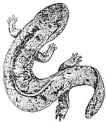
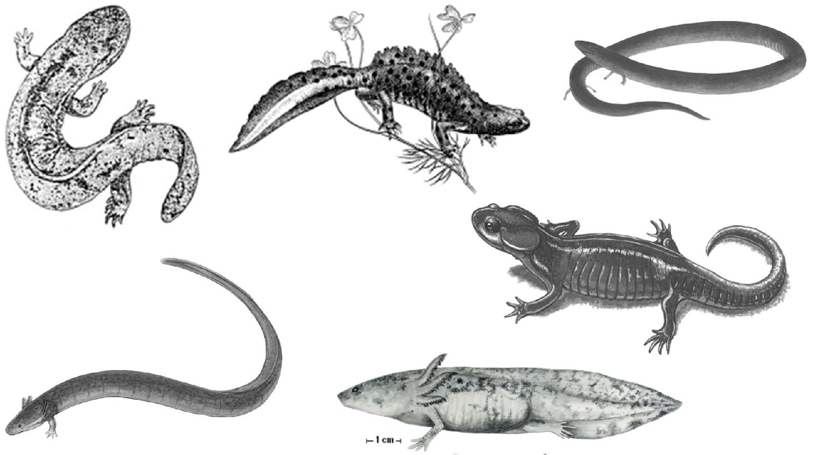
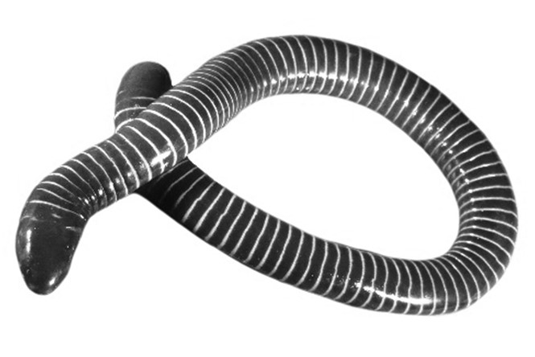
SUBCLASE LISSAMPHIBIA
Anfibios modernos de piel lisa. En general carecen de escamas. Las vértebras están formadas por una sola pieza, dientes pedicelados sencillos y gran reducción de los huesos que forman la bóveda craneal. Se reconocen tres órdenes:
Orden Gymnophiona (Apoda): (200 spp.) (Griego: gymnos, desnudo y ophineos, serpiente). Cecilias. Anfibios poco conocidos de cuerpo vermiforme, sin extremidades ni cinturas, algunos con escamas mesodérmicas. La cola es corta o ausente. Su parecido con las lombrices de tierra se acentúa por los pliegues en su piel, que simulan segmentos. Poseen grandes glándulas mucosas en la parte ventral de cada anillo. Presentan de 95
a 285 vértebras y un pequeño tentáculo facial junto a cada ojo. Son de distribución tropical. 6 familias, 34 géneros y 160 especies. Géneros representativos: Caecilia, Chthonerpeton y Siphonops.
Siphonops
Orden Caudata (Urodela): (691 spp.) (Griego: caudatus, cola).
Salamandras, ajolotes y tritones. Cuerpo con cabeza, tronco y cola. Carencia total de escamas y piel ceñida al cuerpo (al contrario de las ranas que la tienen libre). Dos pares de extremidades en la mayoría (10 a 60 vértebras). La cola es larga y fuerte, con musculatura segmentada y cinturas escapulares muy cartilaginosas. Las larvas tienen tres pares de branquias externas y unos cuantos géneros las retienen toda la vida. Algunas formas adultas carecen de branquias y pulmones, y sólo respiran por la piel o boca. Son de distribución predominantemente holártica. 9 familias, 62 géneros y 350 especies. Géneros representativos: Salamandra, Triturus, Siren y Ambystoma.
Salamandra
Amphiuma
Triturus
Andrias
Ambystoma (Adulto)
Siren
Ambystoma (Neoténico)
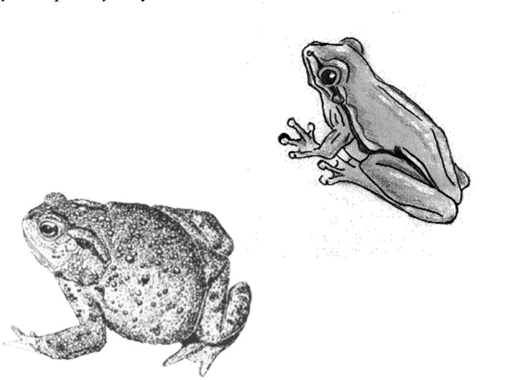
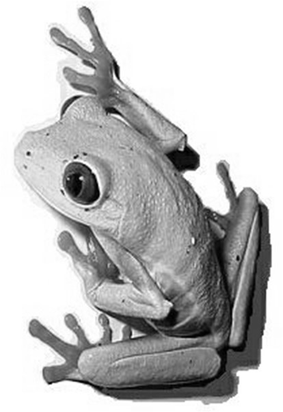


Orden Anura: (6,449 spp.) (Griego: an, sin y oura, cola). Ranas y sapos.
Forman el grupo más numeroso de los anfibios. Poseen piel floja y desnuda, carecen de cola en estado adulto, tienen la cintura pectoral más o menos osificada y por lo general carecen de costillas. Cabeza fusionada al tronco. Dos pares de extremidades con modificación de las posteriores para el salto. Boca amplia, pulmones en todos los casos. La fecundación es externa y no existe neotenia en ningún caso. 6 a 10 vértebras incluyendo el urostilo (fusión de vértebras caudales). Cosmopolitas predominantemente tropicales. 21 familias, 301 géneros y 3,400 especies. Géneros representativos: Lithobates, Rinella, Hyla, Pipa, Alytes y Dendrobates.
Lithobates
Hyla
Agalyichnis
Rhinella
Dendrobates
Alytes
Hemiphractus
Pipa
Colostethus
Gastrotheca
Benton, M. J. 2014. Vertebrate Palaeontology. Blackwell SC. United Kingdom.
Burnie, D. & D. E. Wilson. 2001. Animal: the definitive visual guide to the worldś wildlife.
DK. U.S.A.
Casas A., G. y C. J. McCoy. 1987. Anfibios y reptiles de México. Limusa. México.
Dahiya, N. 2017. Vertebrate zoology. New York Arcler Press. United States of America.
Hickman, C. P. (Jr), L. S. Roberts y F. M. Hickman. 2015. Zoología: principios integrales.
Interamericana-Mc Graw Hill. España.
Kardong, K. V. 2014. Vertebrados: anatomía, comparada función, evolución. Mc Graw Hill. España.
Parker, T. J., W. A. Haswell y J. Nadal. 1991. Zoología: Cordados. Reverté. España.
Romer, A. S. y T. S. Parsons. 1981. Anatomía comparada. Interamericana. México.
Vitt, L.J. & J.P. Caldwell. 2009. Herpetology: an introductory biology of amphibians and reptiles. Academic Press. United States of America.


Sección 16
Los
reptiles
características
Clase: REPTILIA (SAUROPSIDA)
CARACTERISTICAS DE REPTILES NO AVIANOS:
Es difícil dar una diagnosis de los reptiles (saurópsidos) que los defina y los separe de forma clara de otros grupos, pues en ellos, más que en otras clases zoológicas se deben tener en cuenta a las especies desaparecidas (que son muy numerosas y diversas). Aunque Sauropsida y Reptilia no son sinónimos (ya que en la primera quedan excluidas las aves), para fines prácticos les llamaremos reptiles a todos los representantes de la clase y que no posean plumas para el vuelo (asimétrticas). Con este criterio, se conocen alrededor de 10,039 especies vivientes y poseen las siguientes características:
• Tetrápodos quiridiados (primitivamente).
• Desarrollo embrionario dentro de un huevo con cáscara (primitivamente).
• Con amnios
• Sin estados larvarios
• Piel cubierta de escamas epidérmicas (o plumas simétricas en algunos extintos)
• Piel seca sin glándulas mucosas
• Con pulmones
• Esqueleto bien osificado y costillas formando una caja torácica
• Corazón tri o tetracavitario
Los reptiles proceden de los anfibios y comparten con ellos algunas características. De la misma forma tienen características diferenciales con ellos y éstas son:
• Los reptiles tienen una piel dura, seca y escamosa que les ofrece protección contra la desecación y daños físicos. Los anfibios tienen piel delgada, desnuda (actuales) o con escamas dérmicas (cecilias y algunos extintos) y normalmente permeable.
• El huevo de los reptiles contiene alimento y membranas protectoras que permiten el desarrollo embrionario en ambiente aéreo.
• Los reptiles tienen mandíbulas con mayor fuerza de trituración sobre sus presas.
• Los reptiles, en general, tienen algún tipo de órgano copulador que permite la fecundación interna.
• Los reptiles tienen una presión sanguínea más alta y pulmones más desarrollados.
• Tienen, en general, mejor desarrollo en su soporte corporal que los anfibios, y extremidades más eficaces para el desplazamiento en tierra.
Morfología corporal
Los reptiles actuales presentan tres formas corporales básicas, con sus respectivas variantes. Una es la lacertiforme, que es alargada con ambos pares de extremidades y cuerpo cubierto de escamas (mayoría de extintos y actuales). La segunda es con el cuerpo ofidioforme, sin apéndices o muy reducidos (serpientes) y el tercero es el queloniforme, con un caparazón que le cubre el tronco (tortugas y algunos extintos). Las patas tienen primitivamente cinco dedos y pueden estar orientadas hacia los lados del cuerpo o bajo del mismo. Generalmente poseen garras. Tienen boca amplia, narinas cercanas entre sí y el tímpano superficial. Presentan cloaca y los órganos copuladores no se notan externamente.
Tegumento
Las escamas son de origen epidérmico, de formas y tamaños variables, las cuales en la cabeza reciben nombres especiales y su número es constante. En el caparazón de las tortugas las escamas son denominadas escudos por su dureza y gran tamaño. No existen glándulas muscíparas, por lo que la piel es seca. Presentan una gran gama de coloraciones.
Endoesqueleto
Los reptiles presentan un mayor número de huesos que los anfibios actuales. Con excepción de algunos casos presentan en el cráneo una o dos fosas (orificios temporales) en la región temporal para aumentar la superficie de inserción de los músculos de la mandíbula. En los cocodrilos se presenta un paladar secundario, que permite la separación de la vía aérea y de la digestiva, carácter que es muy notable en aves y mamíferos. Las dos primeras vértebras están modificadas para permitir la rotación de la cabeza, llamándose atlas y axis, respectivamente. El cuello está bien definido en reptiles. Algunas costillas llegan hasta el esternón, el cual lleva un hueso característico llamado interclavícula. Las vértebras de la cola son numerosas. El esqueleto apendicular no presenta variaciones muy notables.
Sistema muscular
El avance más notable con respecto a los anfibios es la mayor utilización de la musculatura apendicular que la axial, sobre todo para la locomoción, con excepción de las serpientes.
Sistema digestivo
Poseen todas las regiones típicas de los vertebrados. Es notable el mecanismo de sacar y meter la lengua, la cual se acomoda en un tubo en el piso de la cavidad bucal. Dicho movimiento permite acercar el aire al órgano vomeronasal (Jakobson) y así captar el olor de los materiales. En algunos casos la lengua es protráctil (como los camaleones). El hígado y el páncreas están bien desarrollados.
Sistema circulatorio
Poseen, en su mayoría, un corazón tricavitario (con excepción de los cocodrilos y algunos grupos extintos como dinosaurios y pterosaurios, que es tetracavitario). La organización de las venas y arterias es muy similar a la de los anfibios.
Las branquias sólo se presentan en estado embrionario. La respiración es pulmonar toda la vida. El aire entra por la narina, pasa a la cavidad bucal, la glotis, la tráquea, los bronquios, bronquiolos y alvéolos. La tabicación interna es mayor que en los anfibios porque en este caso es el único órgano respiratorio. El aire es jalado por presión negativa. Las tortugas, al no poder expandir su pecho para respirar, utilizan movimientos de la cavidad abdominal para crear la presión necesaria.
Sistema urogenital
El riñón de los reptiles es más avanzado que el de los anfibios. Están colocados dorsalmente a la cavidad abdominal, siendo de forma lobulada y cada uno con un conducto urinario llamado uréter, que llega hasta la vejiga urinaria. La orina es muy concentrada para evitar la pérdida de agua. Las gónadas son siempre pares, pero en las serpientes y lagartos a menudo se encuentran uno detrás del otro. Los testículos son ovoides y pueden cambiar de tamaño de manera estacional. Los espermatozoides pasan por el epidídimo, y luego por el conducto deferente, el cual desemboca en la cloaca. Los ovarios son multilobulados (en serpientes y lagartos están llenos de linfa, mientras que en cocodrilos, tortugas y tuatara son compactos). El oviducto tiene una modificación en útero, el cual llega a la papila urogenital, abierta en la cloaca. Los machos poseen órganos copuladores y la fecundación, por tanto, es interna. El tipo de pene es comparable al primitivo pene de los mamíferos. Consiste en tejido eréctil con una prominencia esponjosa (glande). Los escamosos poseen hemipenes (1 par) que también son eréctiles.
Sistema nervioso
El encéfalo es mayor y más complejo que el de los anfibios, teniendo más desarrollado el prosencéfalo. No poseen memoria de largo plazo, con la posible excepción de los cocodrilos.
Órganos de los sentidos
Tienen bien desarrollados la visión, el oído y el olfato. Muchos presentan un órgano vomeronasal bien desarrollado que auxilia al olfato y se encuentra en el paladar. Algunas serpientes y saurios sacan y meten la lengua para captar las partículas del aire. Como órgano sensorial exclusivo de ciertas serpientes está el de la foseta, colocado entre la narina y el ojo, y que capta el infrarrojo del espectro, y con eso, la temperatura de las presas.
ASPECTOS FISIOLÓGICOS Y DE ADAPTACIÓN
Reproducción y desarrollo
La época de reproducción de los reptiles viene determinada por condiciones óptimas de tiempo y clima. Fuera de los trópicos corresponde al verano generalmente. La periodicidad de la reproducción está bajo la influencia de la longitud del día o de cambios en la temperatura.
El comportamiento de apareamiento es muy variado y puede ser determinado por el oído, el olfato o la vista. Los cocodrilos machos emiten ruidos. En tortugas acuáticas se hacen exhibiciones natatorias y en las terrestres hay persecuciones y mordiscos. Muchos lagartos machos en época reproductora son territoriales y cuidan su harén de hembras con combates. En algunos casos utilizan vivos colores en gorgueras para atraer las hembras. Las serpientes atraen
a su pareja por el olfato generalmente. Para inducir la cópula se da una serie de contactos de reconocimiento entre las cabezas y los cuerpos entrelazados. En las formas que poseen armas efectivas, como los varanos y las serpientes venenosas, las luchas entre machos son ritualizadas.
La fecundación es interna siempre, incluyendo al tuátara que no posee órgano copulador. En muchas especies las hembras pueden almacenar los espermatozoides y utilizarlos en la fecundación cuando sea necesario. Algunas tortugas pueden retenerlos hasta cuatro años y serpientes hasta seis años. De esta forma, con una sola cópula pueden fecundar varias puestas.
Como algo poco usual entre los vertebrados se sabe que hay reproducción partenogenética en algunos miembros del género Lacerta y Aspidoscelis, así como en Varanus komodensis.
Recientemente se ha encontrado este tipo de reproducción en algunos otros grupos de lacertilios. En los taxones antes mencionados existen algunas poblaciones sólo de hembras y se reproducen con éxito.
La mayor parte de los reptiles son ovíparos, presentándose algunos ejemplos de ovoviviparidad y viviparidad verdadera (algunas serpientes y lagartos). Muchas hembras tienen comportamientos hacia la construcción de nidos. La cantidad de huevos varía con el grupo; los promedios son: 1-200 en tortugas, 50-60 en cocodrilos, cuatro a ocho en lagartos (60 en varanos), ocho a diez en serpientes y diez para el tuátara. Algunas especies presentan comportamiento de cuidado del nido y las crías. Quizás los más espectaculares son los cocodrilos. Las serpientes pitón incuban sus huevos por espacio de seis semanas y una vez pasado este periodo los abandona. Algunos lagartos ayudan a sus vástagos a quebrar el cascarón. No presentan ningún comportamiento de enseñanza.
El huevo de los reptiles
Los reptiles, aves y mamíferos forman un grupo que se distingue por tener un huevo amniótico. Al abandonar la vida acuática por la aérea, los primeros animales terrestres tuvieron que adquirir un huevo complejo que contuviese un sistema completo de supervivencia. Además del saco vitelino que contiene el alimento (presente ya en los peces y anfibios), hay otros tres sacos membranosos: amnios, corion y alantoides. Se consideran todos ellos membranas extraembrionarias porque son estructuras accesorias que se desarrollan después de formado el cuerpo del embrión y son descartadas cuando éste nace.
• Amnios: es un saco lleno de fluido que incluye al embrión y le proporciona un acuario particular para su desarrollo. Flotando libremente en este medio acuático, el embrión queda protegido de choques y adherencias.
• Alantoides: es una bolsa que se forma a partir del intestino posterior del embrión y se encuentra ricamente capilarizada. Recoge los desechos del metabolismo (ácido úrico) y funciona como superficie respiratoria.
• Corion: es la más externa y envuelve el resto del sistema embrionario. Yace inmediatamente debajo de la cáscara. Funciona como superficie respiratoria entre el interior y el exterior. A medida que crece el embrión, el alantoides y el corion se unen y forman una membrana corioalantoidea. Está provista de una rica red vascular conectada a la circulación del embrión.
La fecundación es forzosamente interna porque el espermatozoide debe llegar al óvulo antes de que se forme el cascarón.
La mayor parte son depredadores activos; otros como tortugas y algunos saurios son herbívoros. Las presas son localizadas por la vista (cocodrilos y saurios), olfato y termorreceptores (serpientes). Utilizan el mecanismo del acecho. Los camaleones tienen largas lenguas protáctiles con las que capturan insectos. Generalmente tragan la presa entera, aunque los cocodrilos y tortugas carnívoras pueden cortar y arrancar trozos de la presa. Las serpientes tienen las mandíbulas libres, por lo que pueden tragar presas de mucho mayor diámetro que ellas. Algunas asfixian a sus presas antes de tragarlas. Las hay especialistas en el consumo de huevos. Las más derivadas utilizan toxinas para paralizar la presa y predigerirla fuera del cuerpo.
Mecanismos de defensa
Los cocodrilos se defienden con su tamaño y agresividad. Las tortugas están protegidas por su caparazón y algunas son muy agresivas en sus mordiscos. Los saurios se defienden generalmente con una veloz huida o con mimetismo (sólo dos especies son venenosas). Las serpientes se defienden huyendo, mordiendo o utilizando sus potentes toxinas. Los venenos son una mezcla de enzimas y neurotransmisores y se clasifican en neurotóxicos y proteolíticos, según la acción principal que ejerzan en la víctima. El efecto del veneno varía dependiendo de la presa, por ejemplo, 1 g de veneno de cobra puede matar: 20,000 kg de caballo, 10,000 kg de humano, 8,300 kg de ratón ó 1,200 kg de perro. La peligrosidad de las serpientes para el humano depende de la estructura de sus dientes, la abundancia de estas y sobre todo de la agresividad.
Cada año mueren por mordedura de serpiente 30,000 personas en Asia, 25,000 en América, 500
en Africa y 6 en Australia (Primer lugar en número de especies venenosas).
Temperatura y actividad
Los reptiles actuales son ectotérmicos, lo que limita en cierta forma su actividad y distribución geográfica. El margen superior de temperaturas tolerables de muchos reptiles es alto: 30° en tortugas terrestres, 35° en iguana y 40° en tejú. En animales de clima frío puede ser muy baja (10° en tuátara). La amplitud del margen temperatura-actividad concuerda con las condiciones del espacio vital. Para un habitante de la zona húmeda de manglar oscila entre 35-39°, mientras que para un lagarto del desierto oscila entre 12-32°C.
Comportamiento
Al ser organismos complejos, muestran pautas de comportamiento muy avanzadas.
Muchos defienden su territorio en temporada que no es de reproducción. Por lo general son de hábitos solitarios. Los que habitan zonas templadas y frías presentan hibernación (tortugas, serpientes de cascabel, etc.) y los que viven en ambientes de marcada estacionalidad en cuanto a la humedad pueden presentar estivación (para soportar la temporada seca). Presentan comportamiento mimético (falsas coralillo) y de intimidación (clamidosaurio). Son de hábitos más o menos sedentarios a excepción de las tortugas marinas.
El origen de los reptiles se puede situar muy probablemente en los laberintodontos, específicamente los antracosaurios. Seymouria es la mejor forma de enlace conocida entre las dos clases (anfibios y reptiles), presentando características de ambas. El centro de origen es el continente Euramericano. El representante más antiguo del grupo se sitúa en rocas del Carbonífero (315 millones de años) y corresponde a Hylonomus. Las novedades evolutivas fueron muchas, pero las más importantes son: el desarrollo del huevo amniótico, la piel córnea que evita la deshidratación, una respiración eficiente (basada en la presión negativa de los pulmones) y el desarrollo de extremidades más fuertes (para sostener el cuerpo). Los reptiles han sufrido dos grandes radiaciones adaptativas. La primera ocurrió a principios del Pérmico con los anápsidos.
La segunda radiación fue más importante y ocurrió a mediados del Triásico. De esta gran radiación se desarrollaron los pterosaurios, los grandes reptiles marinos, los dinosaurios, las tortugas, los cocodrilos y muchas otras formas poco conocidas. A finales del Cretácico aconteció una extinción masiva que puso fin al dominio de los reptiles. Sólo sobrevivieron representantes de los órdenes actuales (cocodrilos, tuataras, escamosos y tortugas).
IMPORTANCIA ECOLÓGICA
Los reptiles son importantes componentes de los ecosistemas tropicales y templados. Las serpientes controlan las poblaciones de roedores y anfibios principalmente; además son alimento de aves rapaces, mangostas y otras serpientes. Los lacertilios consumen cantidades importantes de insectos y otras pequeñas presas y les sirven de alimento a depredadores mayores. Las tortugas controlan las poblaciones de pequeños peces en cuerpos de agua dulce. Los cocodrilos y los dragones de Komodo son los depredadores más grandes dentro de los reptiles, no siendo selectivos en sus presas. En resumen, los reptiles forman parte de la mayoría de cadenas y redes tróficas de la biósfera.
DISTRIBUCIÓN GEOGRÁFICA
La obtención de calor tipo ectotermo restringe la distribución de los reptiles a las zonas templadas y tropicales. Las formas más grandes (cocodrilos y grandes serpientes) son más bien tropicales y en las zonas frías habitan pequeños reptiles. No existen en las zonas polares.
IMPORTANCIA ECONÓMICA
Los reptiles no tienen gran importancia económica. La principal explotación es la peletería; la piel de cocodrilos, cobras, pitones, iguanas y algunos otros es utilizada para la elaboración de calzado y bolsos. Los cocodrilos se crían con éxito.
Algunos tienen importancia alimenticia como las tortugas marinas y las iguanas (muy apreciadas en América Latina). Las tortugas de las Galápagos eran aprovechadas por los marineros del siglo pasado. Otros reptiles tienen importancia etnobiológica. Muchas serpientes son utilizadas con fines medicinales y mágicos en Asia, África y América. Las culturas precolombinas consideraban a algunas especies de serpientes como deidades. Por último, tienen importancia en el comercio de mascotas, siendo animales favoritos en los terrarios.
Literatura complementaria:
Álvarez del Toro, M. 2001. Los Crocodylida de México. INE. México.
Álvarez del Villar, J. 1977. Los cordados: origen, evolución y hábitos de los vertebrados.
CECSA. México.
Benton, M. J. 2014. Vertebrate Palaeontology. Blackwell SC. United Kingdom.
Burnie, D. & D. E. Wilson. 2001. Animal: the definitive visual guide to the worldś wildlife.
DK. U.S.A.
Carroll, R. L. 1988. Vertebrates paleontology and evolution. Freeman. USA.
Casas A., G. y C. J. McCoy. 1987. Anfibios y reptiles de México. Limusa. México.
Dahiya, N. 2017. Vertebrate zoology. New York Arcler Press. United States of America.
Hickman, C. P. (Jr), L. S. Roberts y F. M. Hickman. 2015. Zoología: principios integrales.
Interamericana-Mc Graw Hill. España.
Kardong, K. V. 2014. Vertebrados: anatomía, comparada función, evolución. Mc Graw Hill. España.
Mattison, C. 2002. The encyclopedia of snakes. Cassel Paperbacks. Hong Kong.
Parker, T. J., W. A. Haswell y J. Nadal. 1991. Zoología: Cordados. Reverté. España.
Romer, A. S. y T. S. Parsons. 1981. Anatomía comparada. Interamericana. México.
Ruggiero, M. A., D. P. Gordon, T. M. Orrell, N. Bailly, T. Bourgoin, R. C. Brusca, T. Cavalier-Smith, M. D. Guiry, P. M. Kirk. 2015. A higher level classification of all living organisms. PLoS
ONE. :10(4).
Vitt, L.J. & J.P. Caldwell. 2009. Herpetology: an introductory biology of amphibians and reptiles. Academic Press. United States of America.


Sección 17
Los
reptiles
diversidad y taxonomía
CLASE REPTILIA (SAUROPSIDA)
Los reptiles o saurópsidos son de los primeros vertebrados verdaderamente adaptados a la vida terrestre.
Pueden distinguirse fácilmente de los anfibios por tener la piel recubierta de escamas que impiden la desecación. Pero a diferencia de los anfibios carecen de larvas acuáticas y los recién nacidos son una versión en miniatura de los adultos.
Siempre respiran por pulmones, nunca con branquias o a través de la piel. La fecundación es interna. La mayoría pone huevos, pero algunas especies son ovovivíparas y vivíparas. El embrión está dentro de un saco lleno de líquido llamado amnios. La clasificación descrita enseguida está basada en los trabajos de Benton (2015) y Ruggiero et al. (2015);el nombre de la clase ha pasado de Reptilia originalmente (que incluía a los sinápsidos) a Sauropsida (cuando se excluyó el linaje hacia mamíferos) y de nuevo Reptilia que considera a las aves como una subclase al interior; este último es el criterio más reciente. Se tienen descritas unas 10,039 especies vivientes de reptiles no avianos y se organizan en dos subclases:
SUBCLASE PARAREPTILIA
Son los reptiles cuyo cráneo carece de fosas temporales aún en el embrión. Incluye las formas primitivas o de transición, que convivieron con los anfibios del Pérmico.
†Orden Mesosauria: Son reptiles acuáticos primitivos y fueron los primeros en regresar al agua. Tenían el cuerpo alargado, la cola lateralmente comprimida y las mandíbulas con numerosos dientes a manera de agujas. Más o menos 1 metro de longitud. Habitaban aguas continentales. Género representativo: † Mesosaurus.
† Mesosaurus
†Orden Millerosauria: grupo de parareptiles que incluye saurópsidos muy primitivos que vivieron del Pérmico medio al superior. Fueron pequeños insectívoros de cuerpo lacertiforme. Géneros representativos: † Milleretta,
† Eunotosaurus.
† Milleretta
†Orden Procolophonomorpha: Son reptiles que aparecieron a mediados del Pérmico, que tenían formas corporales desde pequeñas lagartijas hasta masivos como Pareiasaurus. Se cree que de este grupo evolucionaron las modernas
tortugas.
Géneros
representativos:
† Rhipaeosaurus y
† Pareiasaurus.
† Pareiasaurus

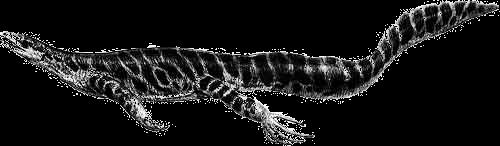


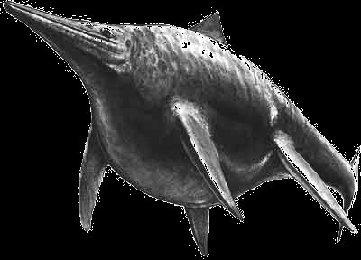
SUBCLASE EUREPTILIA
†Orden Protorothyrida: Son los más antiguos de los reptiles. Aparecieron hace al menos 315 millones de años y se extinguieron 90 millones de años después. Muchos de ellos presentaban escasos avances respecto a sus antepasados, los anfibios laberintodontos. Se caracterizaban por el completo techado del cráneo y una pelvis aplanada en forma de placa. Géneros representativos: † Hylonomus y † Paleothyris.
† Hylonomus
CLADO: DIAPSIDA (Subclase para algunos autores)
Todos los reptiles modernos pertenecen a este clado. El cráneo se caracteriza por tener un par de aberturas a cada lado, por detrás de los ojos, aunque en gurpos como las tortugas, estas aberturas se pierden en la segunda mitad del desarrollo embrionario. Los músculos de los maxilares están conectados a ligamentos que se extienden a través de esas aberturas y proporcionan a estos animales unas mandíbulas muy poderosas.
†Orden Araeoscelidia: Los más primitivos de los diápsidos. Parecidos a lagartijas, con largos cuellos y delgadas patas corredoras. Algunos autores los incluyen en los euriápsidos y otros los elevan al nivel de subclase por la abertura postorbital que se muestra degenerada. Género representativo:
† Araeoscelis.
†Orden Younginiformes (Eosuquia): Reptiles semejantes a lagartos y
† Araeoscelis
probablemente ancestros de los escamosos actuales. Presentaban características propias de reptiles primitivos como orificio pineal y estructura del cráneo muy similar a los laberintodontos: se diferencía en dos segmentos, occipital y maxilar, articulados de forma que el segmento maxilar se desplaza con relación al occipital, al abrir la boca. Pérmico al Triásico. Género representativo: Hovasaurus.
† Hovasaurus
†Infraclase ICHTHYOPTERIGIA
†Orden Ichthyosauria: Eran los reptiles más especializados a la vida acuática. Tenían el cuerpo fusiforme, algo comprimido, terminando en una aleta caudal heterocerca invertida. Las extremidades estaban totalmente modificadas hacia aletas y la propulsión del cuerpo era por parte de la cola.
Posiblemente eran vivíparos y por lo tanto no tenían la necesidad de desovar en tierra como el resto de reptiles marinos. Ocuparon el mismo nicho ecológico que los cetáceos de la actualidad. Géneros representativos:
† Ichthyosaurus, † Mixosaurus y † Ophthalmosaurus.
† Ichthyosaurus
† Shonisaurus
† Ophtalmosaurus


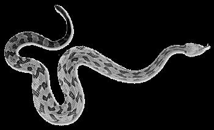
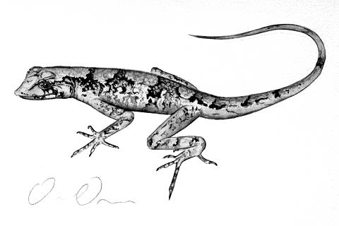


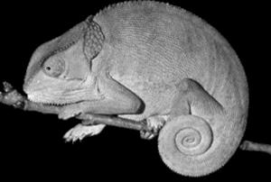
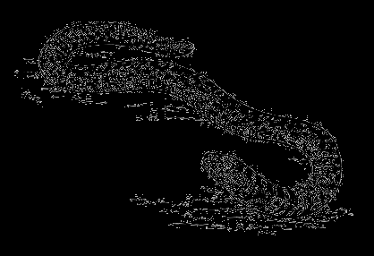
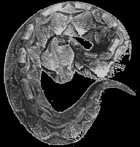
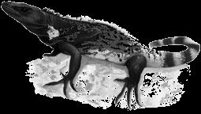
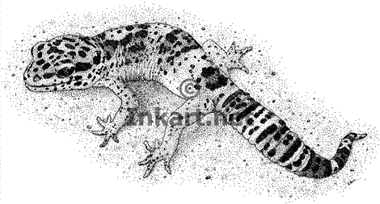
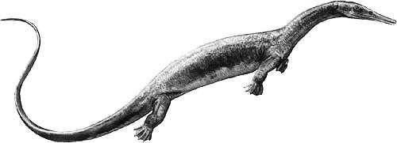
Infraclase LEPIDOSAUROMORPHA
†Orden Thalatosauria: Es un grupo especializado de reptiles semiacuáticos con el cráneo prolongado en un hocico y aberturas nasales retrasadas. Cuerpo alargado con extremidades en forma de paleta. Vivían probablemente en los mares cerca de las costas durante el Triásico. Género representativo:
† Askeptosaurus.
† Askeptosaurus
Orden Squamata: (9,671 spp.) Es el grupo de reptiles más diversificado y exitoso de la actualidad. Incluye serpientes, lagartos y anfisbenios. Piel con escamas o placas epidérmicas córneas que sufren mudas periódicas. En general, han perdido secundariamente una o las dos fosas temporales. Los machos poseen un par de órganos copuladores denominados hemipenes.
Géneros representativos: Gekko, Iguana, Chamaeleo, Heloderma, Varanus, Lacerta, Boa, Coluber, Naja, Vipera y Crotalus.
Eublepharis
Naja
Boa
Chamaeleo
Varanus
Amphisbaena
Anolis
Crotalus
Heloderma
Bitis
Ctenosaura
Orden Rinchocephala (Esfenodontos): (2 spp.). Constituyen un antiguo grupo de reptiles que estuvo bien diversificado en el Triásico y Jurásico.
Tienen el ojo pineal bien desarrollado, la cloaca en una abertura transversal, los huesos nasales reducidos y los huesos parietales estrechos. Carecen de órgano copulador. El único género con representantes vivos es: Sphenodon.
Sphenodon


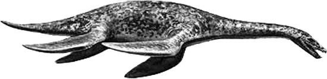


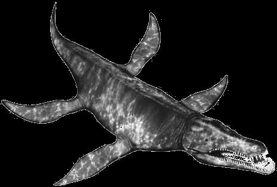

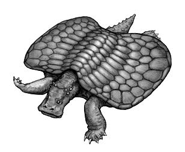

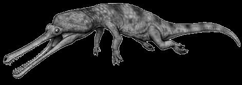
†Orden Choristodera: Reptiles semejantes a cocodrilos habitaban los cuerpos de agua dulce en el Cretácico. Probablemente emparentados cercanamente con las modernas tuátaras. Género representativo:
† Champsosaurus.
† Champsosaurus
Infraclase ARCHOSAUROMORPHA
CLADO: PANTESTUDINES
†Orden Nothosauroidea: Eran reptiles marinos piscívoros de cuerpo hidrodinámico. El cuello, el tronco y la cola eran largos, tenían patas palmeadas, mandíbulas estrechas y dientes agudos. Se movían por propulsión de las extremidades. Ejemplo: † Nothosaurus y † Pistosaurus.
† Nothosaurus
† Pistosaurus
†Orden Plesiosauria: Fueron los grandes reptiles marinos del Mesozoico.
Las extremidades están modificadas hacia remos. Hasta 10 huesos en cada dedo. Cuerpo rechoncho y cola corta. Algunos de cabeza pequeña y cuello largo y otros de gran cabeza y cuello corto. Una densa serie de costillas se conectaba en la región ventral para darle rigidez al tórax (para sostener el cuerpo cuando salían del agua). Vida costera en muchas formas. Ejemplos:
† Plesiosaurus
† Kronosaurus, † Elasmosaurus y † Plesiosaurus.
† Cryptocleidus
† Elasmosaurus
† Liopleurodon
† Kronosaurus
†Orden Placodonta: Fueron los nadadores menos especializados entre los reptiles marinos. Aparecieron y desaparecieron en el Triásico. El nombre viene de los dientes en forma de placa que tenían en el paladar. Muchos tenían caparazón como las tortugas, que les protegían el dorso y el vientre. Ejemplos:
† Placodus y † Henodus.
† Placochelys
† Henoduss
† Placodus
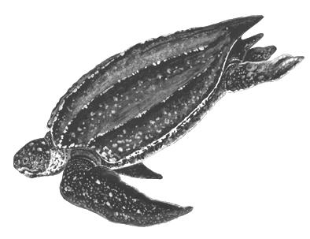
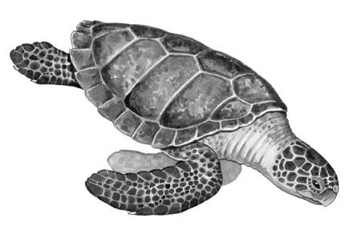
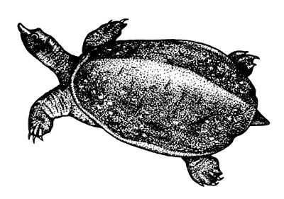
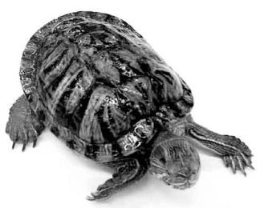
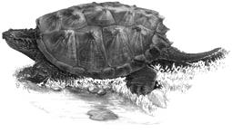


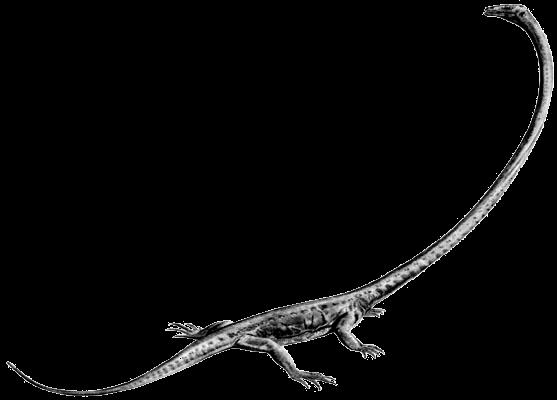
Orden Chelonia (Testudines): (341 spp.) Se caracterizan por tener el cuerpo (a excepción de cabeza y extremidades) cubierta por un caparazón dividido en dos grandes secciones: un dorsal llamada espaldar y una ventral llamada plastrón. Mandíbulas sin dientes pero con fundas córneas. Vértebras y costillas fusionadas al caparazón. Desde el principio se han diferenciado por esto y existen desde hace 200 m.a. Géneros representativos: Testudo, Pseudemys, Lepidochelys, Dermochelys y Apalone.
Dermochelys
Lepidochelys
Pseudemys
Chelydra
Apalone
Kinosternon
CLADO: ARCHOSAURIFORMES
†Orden Prolacertiformes: Es un grupo que incluye a los miembros mas
†
antiguos de los arcosauriomorfos. Aparecen en el Pérmico superior. Se Tanystropheus
caracterizan por tener cuello largo, debido a una elongación de las vértebras individuales. El cráneo se asemeja mucho al de las lagartijas (Squamata), de ahí el nombre del orden. Géneros representativos: † Protorosaurus y
† Tanystropheus.
†Orden Rhynchosauria: Fueron los más comunes y mejor distribuidos de los arcosauriomorfos primitivos. Vivieron en el Triásico. Se caracterizaron por una dentición altamente especializada, con muchas filas de dientes.
Fueron en su mayoría herbívoros. Géneros representativos: † Mesosuchus y
† Hyperodapedon.
† Hyperodapedon
†Orden Trilophosauria: Grupo de arcosauriomorfos herbívoros que vivieron a finales del Triásico.Tenían un cráneo corto y pesado, equipado con dientes en las mejillas, planos y grandes con el corte agudo emergido para cortar materia vegetal. Los dientes están ausentes en la mandíbula inferior, y posiblemente tenían un pico córneo. Género representativo: † Trilophosaurus.
† Trilophosaurus

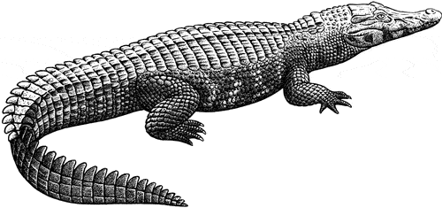

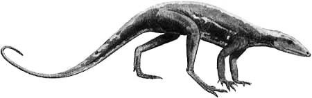

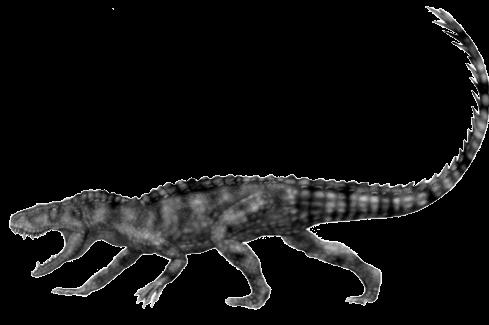
†Orden Phytosauria: Fueron abundantes en el Triásico superior. Se asemejaban mucho a los cocodrilos actuales, pero tenían las narinas no en la punta del hocico, sino en una posición muy atrasada. Posiblemente con una forma de vida muy similar. Todos de hábitos carnívoros. Géneros representativos: † Erythrosuchus y † Rutiodon.
† Rutiodon
†Orden Ornithosuchida: Conjunto de formas avanzadas de tecodontos (quizá un grupo artificial) que incluye reptiles con un gran desarrollo de las extremidades inferiores y posiblemente de locomoción bípeda o mixta.
Quizás los dinosaurios descendieron de este grupo. Fueron abundantes en el Triásico. Géneros representativos: † Euparkeria y † Lagosuchus.
† Lagosuchus
†Orden Rauisuchia: (+) Fueron formas grandes de tecodontos del Triásico, que alcanzaron hasta 6 metros de longitud. Eran cuadrúpedos, con un mayor desarrollo de las extremidades posteriores. El tobillo y el pie presentaban avances más del tipo de cocodrilos. Todos carnívoros. Géneros representativos: † Postosuchus y † Ticinosuchus.
† Postosuchus
Orden Crocodylida: (25 spp.) Son los únicos de los reptiles dominantes que tienen representantes actuales. Aparecieron en el Triásico. Los primeros eran pequeños y de hábitos terrestres. Se caracterizan por tener el corazón tetracavitario, extremidades anteriores con cinco dedos y las posteriores con cuatro. Las escamas forman placas duras. La cloaca tiene una abertura longitudinal. Generalmente habitan humedales, ríos o lagos de las zonas tropicales siendo importantes depredadores no selectivos. Géneros representativos: Caiman, Melanosuchus, Crocodylus y Gavialis.
Crocodylus
Caiman
Gavialis
Melanosuchus


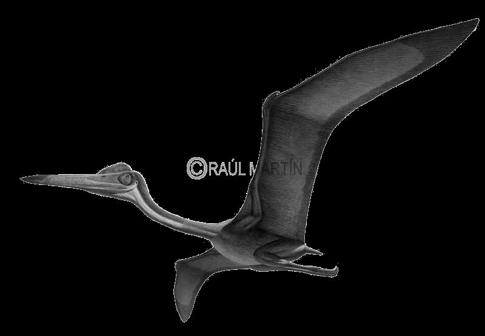


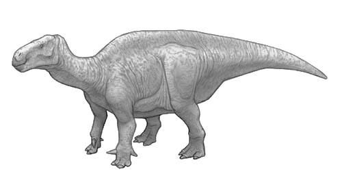
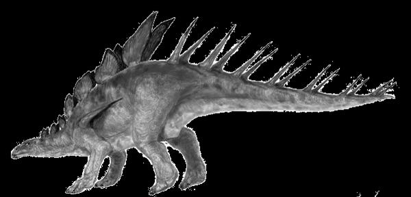
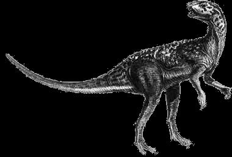
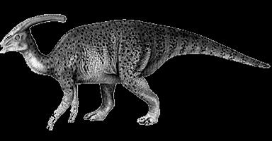
†Orden Pterosauria: El primer grupo de vertebrados adaptados al vuelo.
Tenían modificaciones de las extremidades delanteras para sostener una membrana que formaba un ala y presentaban aligeramiento de los huesos. Es muy posible que hayan sido endotermos. Aparecieron a finales del Triásico y desaparecieron en la gran extinción del Cretácico. Los primeros tenían vuelo activo y posteriormente perfeccionaron el planeo. Los más grandes vertebrados voladores se incluyen aquí. Géneros representativos:
† Pteranodon, † Rhamphorhinchus y † Quetzalcoathlus.
† Ramphorhynchus
† Pteranodon
† Sordes
† Quetzalcoatlus
† Dimorphodon
†Orden Ornitischia: Es el segundo grupo de dinosaurios y se caracteriza por tener la cintura pélvica tetrarradiada o tipo “ave”. Incluye muchas formas, tanto de locomoción bípeda como cuadrúpeda, pero sin excepción poseían las patas orientadas hacia abajo del cuerpo. Muchos poseían cuernos, púas o placas que les servían de protección. Todos eran herbívoros. Vivieron desde principios del Jurásico hasta finales del Cretácico. Géneros representativos:
† Triceratops, † Kritosaurus, † Stegosaurus, † Iguanodon y † Parasaurolophus.
† Triceratops
† Heterodontosaurus
† Ankylosaurus
† Parasaurolophus
† Iguanodon
† Kentrosaurus


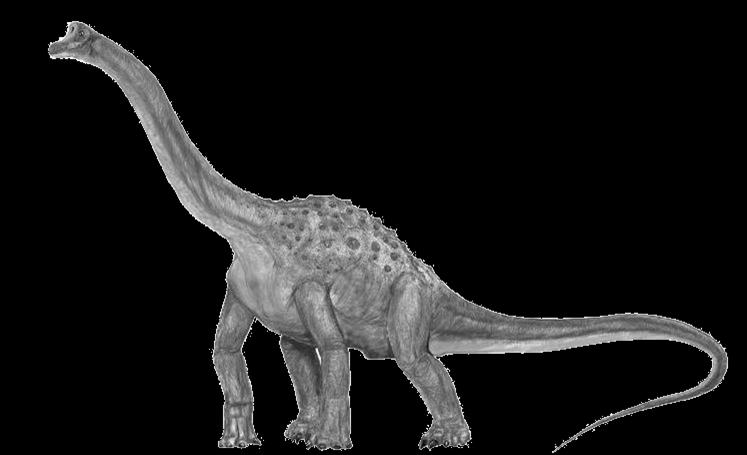
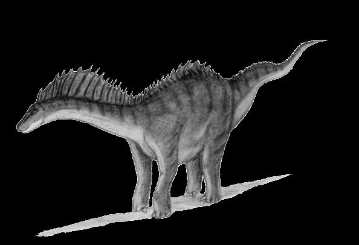


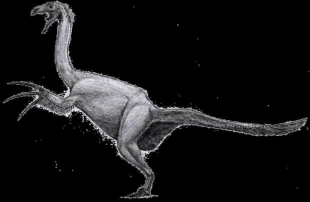

†Orden Saurischia: Es uno de los dos grupos que forman los dinosaurios. Se caracterizan por tener la pelvis trirradiada o típicamente “reptiliana”. Tenían las patas orientadas hacia abajo del cuerpo. Se divide en dos grupos bien diferenciados: todos los dinosaurios carnívoros forman uno (terópodos, locomoción bípeda), y los gigantes de cuello largo forman el otro (saurópodos). Los más grandes vertebrados se encuentran dentro de este orden. Vivieron del Triásico al Cretácico. Es el grupo que originó a las aves.
Géneros representativos: † Tyrannosaurus, † Giganotosaurus, † Brachiosaurus
† Diplodocus, † Argentinosaurus..
† Spinosaurus
† Diplodocus
† Sauroposeidon
† Amargasaurus
† Sinosauropteryx
† Therizinosaurus
† Velociraptor
† Brachiosaurus
† Tyrannosaurus
Literatura complementaria:
Álvarez del Toro, M. 2001. Los Crocodylida de México. INE. México.
Álvarez del Villar, J. 1977. Los cordados: origen, evolución y hábitos de los vertebrados.
CECSA. México.
Benton, M. J. 2015. Vertebrate Palaeontology. Blackwell SC. United Kingdom.
Burnie, D. & D. E. Wilson. 2001. Animal: the definitive visual guide to the worldś wildlife.
DK. U.S.A.
Carroll, R. L. 1988. Vertebrates paleontology and evolution. Freeman. USA.
Casas A., G. y C. J. McCoy. 1987. Anfibios y reptiles de México. Limusa. México.
Dahiya, N. 2017. Vertebrate zoology. New York Arcler Press. United States of America.
Hickman, C. P. (Jr), L. S. Roberts y F. M. Hickman. 2015. Zoología: principios integrales.
Interamericana-Mc Graw Hill. España.
Kardong, K. V. 2014. Vertebrados: anatomía, comparada función, evolución. Mc Graw Hill. España.
Mattison, C. 2002. The encyclopedia of snakes. Cassel Paperbacks. Hong Kong.
Parker, T. J., W. A. Haswell y J. Nadal. 1991. Zoología: Cordados. Reverté. España.
Romer, A. S. y T. S. Parsons. 1981. Anatomía comparada. Interamericana. México.
Ruggiero, M. A., D. P. Gordon, T. M. Orrell, N. Bailly, T. Bourgoin, R. C. Brusca, T. Cavalier-Smith, M. D. Guiry, P. M. Kirk. 2015. A higher level classification of all living organisms. PLoS
ONE. :10(4).
Vitt, L.J. & J.P. Caldwell. 2009. Herpetology: an introductory biology of amphibians and reptiles. Academic Press. United States of America.


Sección 18
Las
aves
características
CLASE: AVES
CARACTERÍSTICAS:
Presencia de plumas
Extremidades anteriores modificadas hacia el vuelo
Glándula sebácea sobre el comienzo de la cola
Esqueleto osificado con cavidades neumáticas
Mandíbulas cubiertas con pico córneo
No existen dientes
Corazón tetracavitario
Eritrocitos nucleados
Presencia de siringe (órgano fonador)
Vejiga inexistente
Hembras sólo con ovario y oviducto izquierdo
Fecundación interna e incubación externa
MORFOLOGÍA Y ANATOMÍA
Morfología corporal
Cuerpo generalmente aerodinámico con cuatro regiones: cabeza, cuello, tronco y cola.
El cuello es desproporcionadamente largo y funciona como órgano de equilibrio al andar. Las extremidades anteriores modificadas en forma de alas y las posteriores adaptadas de varias formas para posarse, andar y nadar. El pie generalmente tiene 4 dedos que terminan en garra. Las narinas están colocadas en el pico, el tímpano está parcialmente cubierto por plumitas auditivas. La cloaca se encuentra en la parte posterior del tronco.
Plumas
Son estructuras ligeras pero muy resistentes, exclusivas de las aves (y probablemente algunos dinosaurios). Constan de varias partes: un cálamo, que está metido dentro de la piel; un raquis o eje que sostiene a las barbas. Las barbas forman una superficie plana
que se llama estandarte o vexilo (enganchadas unas con otras).
Las barbas a su vez se subdividen en bárbulas.
1. Plumas coberteras: son las que le dan la forma externa al cuerpo del ave. Las plumas de vuelo se incluyen aquí. Las plumas que se insertan en las manos se denominan primarias y las que se insertan en el radio son las secundarias.
2. Plumón: llamado también plumas protectoras. Son suaves penachos escondidos por debajo de las plumas coberteras y las barbas carecen de ganchos. Sirven principalmente para mantener el calor.
3. Filoplumas: tienen aspecto de pelos o plumas degeneradas. Son las que quedan en las gallinas desplumadas. No tienen función conocida. Se encuentran en las comisuras bucales de vencejos y chotacabras.
4. Plumón polvera: sus extremos se desintegran a medida que crecen, y van soltando un polvo con aspecto de talco, que ayuda a impermeabilizar las plumas y proporcionarles brillo metálico. Las poseen colibríes, garzas, halcones y papagayos, entre otras.
Las plumas son estructuras epidérmicas evolucionadas de las escamas de los reptiles.
Aunque las aves poseen escamas (patas) y plumas, no hay formas intermedias. Cuando está totalmente desarrollada una pluma, como un pelo de mamífero, es una estructura muerta. La sustitución o muda de las plumas es muy ordenada. Con excepción de los pájaros bobos (pingüinos) que mudan en su totalidad en un determinado momento, las plumas son reemplazadas gradualmente para evitar la aparición de parches desprovistos de ellas. Las plumas de las alas se mudan en pares para mantener el equilibrio.
Tegumento
La piel está cubierta por las plumas, que son estructuras exclusivas de las aves. Las escamas se encuentran en las patas. Los dedos terminan en garras y en algunos casos existe una membrana interdigital. En la cola se encuentra una glándula llamada uropigial, de la cual el ave toma con el pico la secreción grasosa y la aplica en el plumaje.
Endoesqueleto
El sistema está muy modificado para permitir el vuelo. El cráneo tiene fusionados los huesos y es muy poroso. En la columna vertebral se fusionan muchas vértebras para formar el característico hueso sinsacro, al cual se articula la cintura pélvica. También se fusionan las últimas vértebras caudales en el hueso pigostilo, el cual sostiene la glándula uropigial. El esternón es muy amplio para permitir la inserción de los músculos pectorales, los cuales son los elementos más importantes para el vuelo, junto con las alas. Los huesos de la mano y del pie están muy modificados por pérdida y fusión.
Sistema muscular
En las aves es muy notoria la tendencia a desarrollarse más la musculatura apendicular que la axial, teniendo como mejor ejemplo el músculo pectoral, el cual se origina junto con otros en la superficie del esternón y se inserta en el húmero. Su función es, por lo tanto, la de bajar el ala, mientras otro músculo la eleva efectuando así el vuelo.
Las aves actuales presentan un pico córneo que se encuentra adaptado para tomar el alimento. No tienen dientes, de manera que el alimento es deglutido sin ser macerado. En el techo de la cavidad oral existe un paladar secundario modificado; en el piso se localizan una lengua puntiaguda y la glotis. En la parte posterior se encuentran las aberturas de la trompa de Eustaquio.
El esófago es largo y su parte mediàse modifica en una bolsa llamada buche que guarda temporalmente el alimento. El estómago también se encuentra muy modificado en las aves granívoras, teniendo una parte muy musculosa que muele el alimento, auxiliado por pequeñas piedras, que se llama molleja. El intestino es muy largo y termina en el ano, que desemboca en la cloaca. Tanto el hígado como el páncreas, que son órganos bien definidos, se comunican con el intestino en la porción llamada duodeno, cerca del píloro.
Sistema respiratorio
En las aves, las finas ramificaciones de los bronquios, en lugar de terminar en alvéolos como en los mamíferos, se desarrollan como una especie de tubos, los parabronquios, a través de los cuales el aire fluye continuamente. Es típico el sistema de sacos aéreos interconectados (9 en total), que están localizados por pares en el tórax y abdomen, y que incluso se extienden a través de diminutos tubos dentro de la médula de los huesos largos. El aire entra y fluye directamente dentro de los sacos aéreos posteriores. Al expirar, este aire oxigenado es canalizado a través del pulmón y recolectado en los sacos aéreos anteriores. Es el sistema respiratorio más especializado de los vertebrados.
Sistema circulatorio
El corazón es tetracavitario sin excepciones. Las dos venas yugulares en el cuello están conectadas por una vena transversa que es una adaptación para desviar la sangre de una arteria yugular a otra, a medida que gira la cabeza. Las arterias de alas y pecho son muy grandes. La tasa de latidos cardíacos es extremadamente rápida y hay una relación inversa entre tasa metabólica y peso corporal. Por ejemplo, un pavo tiene 93 pulsaciones por minuto, mientras que un colibrí tiene 500 en reposo. Los eritrocitos son nucleados. Los fagocitos son increíblemente activos y eficientes para la reparación de heridas, así como para la destrucción de los microbios.
Sistema urogenital
Las aves poseen un riñón metanefro. La filtración se lleva a cabo en la nefrona. La orina es conducida por el uréter, el cual llega directamente a la cloaca, sin unirse con el otro antes. No poseen vejiga y la orina es muy concentrada. Los testículos están colocados en la parte dorsal de la cavidad abdominal, y los conductos deferentes se abren separadamente en la cloaca. Este conducto tiene un extremo dilatado a manera de vesícula seminal. Los testículos sufren un gran desarrollo en la época de cría, aumentando su tamaño hasta 300 veces. Generalmente no hay un órgano copulador definido, aunque la fecundación siempre es interna (contacto de cloacas). Los patos, gansos y algunas otras aves son la excepción. Los vencejos copulan en vuelo. El único ovario desarrollado es el izquierdo, teniendo el oviducto largo y con glándulas que secretan las membranas, el cascarón y la albúmina que cubre a los huevos.
Es más desarrollado que en los reptiles. En el encéfalo es notable el desarrollo del cerebelo y de los lóbulos ópticos, relacionados respectivamente con la complejidad de movimientos del cuerpo y con la aguda visión de estos vertebrados. Hay desarrollo de la memoria.
Órganos de los sentidos
El sentido más desarrollado es la vista. El olfato y el gusto son poco utilizados por las aves.
La audición es importante pero no hay gran desarrollo del oído externo como los mamíferos.
ASPECTOS FISIOLÓGICOS PARTICULARES
Alimentación
Originalmente se cree que las aves eran insectívoras y que esto fue lo que activó la evolución hacia el vuelo. Actualmente existen aves para cazar cualquier tipo de insecto: algunas perforan la tierra, en la madera, sobre las hojas o ramas e incluso en pleno vuelo. Muchas aves se alimentan de otros animales: lombrices, moluscos, crustáceos, peces, ranas, reptiles mamíferos y otras aves. Casi la quinta parte de las especies se alimentan de néctar. De acuerdo a sus preferencias alimenticias se clasifican en dos grupos:
1. Eurífagas ó de amplio espectro trófico. Se refiere a las aves generalistas en sus preferencias alimenticias y que consumen lo que es abundante estacionalmente.
2. Estenófagas ó de alimentación estricta. Se refiere a las especies que consumen un recurso específicamente.
Los picos de las aves están fuertemente adaptados para diferentes hábitos alimenticios, desde los más comunes como el de los cuervos, hasta los más especializados como los de los flamencos.
Las aves, debido a su alto metabolismo, son animales voraces. Las aves pequeñas comen relativamente más que las grandes, ya que su tasa metabólica es mayor. Por ejemplo, la tasa metabólica de un colibrí en reposo es 12 veces mayor que una paloma y 25 veces la de un gallo.
Un colibrí de 3 gramos puede consumir el 100% de su peso al día, mientras que un gallo sólo necesita el 3.4%. Las aves procesan rápidamente su alimento con un equipo digestivo muy eficiente. Las bayas pueden pasar completamente por el tubo digestivo de un mirlo en 30 minutos y un ratón puede ser digerido en 3 horas por un búho. El buche es un engrosamiento del esófago que sirve para almacenar alimento. En tórtolas, palomas y loros, el buche también produce una leche con la que alimentan a la progenie.
Excreción
Las aves, igual que los reptiles, excretan sus desechos nitrogenados como ácido úrico en lugar de urea, lo que es una adaptación que se originó con la evolución del huevo con cáscara. La acumulación de urea dentro del huevo pronto llegaría a límites tóxicos, mientras que el ácido úrico se cristaliza fuera de solución, siendo inofensivo. Dado que el ácido úrico presenta una baja
solubilidad, un ave puede secretar 1 g de ácido úrico con sólo 3 ml de agua, mientras que un mamífero puede requerir 60 ml de agua para excretar 1 g de urea. La concentración de ácido úrico ocurre en la cloaca, donde se forma una pasta blanca junto con los desechos alimenticios. Las aves pueden excretar ácido úrico 3,000 veces más concentrado que lo que aparece en sangre. Los mamíferos más eficientes (desierto) sólo excretan la urea 25 veces más concentrada que en la sangre. Las aves marinas han desarrollado un mecanismo para excretar el exceso de sales que se ingieren con los alimentos. Las glándulas salinas se localizan una sobre cada ojo y son capaces de excretar una solución altamente concentrada de cloruro de sodio. La solución pasa de las narinas internas a las externas, dándoles a las gaviotas y petreles una nariz perpetuamente escurrente.
El vuelo en las aves
La capacidad de volar es una de las características que hicieron de las aves un grupo exitoso. El vuelo de las aves es un fenómeno muy poco conocido. Sin embargo, se sabe que el ala de las aves es un plano de sustentación sujeto a las leyes de la aerodinámica. Están adaptadas para alcanzar grandes alturas a bajas velocidades. El ala es aerodinámica en sección transversa, con una superficie inferior ligeramente cóncava y con unas pequeñas plumas que se sujetan estrictamente en donde el margen anterior choca con el aire. Estas plumas (llamada álulas) ayudan a evitar las turbulencias del aire cuando el ala se dobla para frenar o descender.
Formas básicas de las alas en las aves
1. Alas elípicas: para maniobrar en zonas forestales, como los gorriones o carpinteros.
Están provistas de numerosas ranuras entre las plumas primarias, lo que les confiere gran maniobrabilidad, vuelo a baja velocidad y despegues y aterrizajes frecuentes.
Cada pluma se comporta como un ala pequeña.
2. Alas de alta velocidad: Las aves que se alimentan al vuelo, como golondrinas, colibríes y vencejos, o las que hacen grandes migraciones, como golondrinas marinas y gaviotas. Tienen alas descendientes en dirección caudal que se afinan hacia el extremo. No tienen hendiduras entre las plumas.
3. Alas de planeo: Son alas estrechas y largas que carecen de ranuras y están adaptadas para un planeo dinámico a altas velocidades. Tienen la más alta eficiencia aerodinámica, pero tienen muy poca maniobrabilidad. Ejemplo: albatros, fragatas, alcatraces y pelícanos. Aprovechan los vientos marinos.
4. Alas con alta capacidad elevadora: Los buitres, halcones, águilas y lechuzas son depredadores que llevan cargas pesadas. Tienen alas con muchas hendiduras terminales, con álulas y un pronunciado combamiento, todo lo cual promueve una alta capacidad de elevación a bajas velocidades.
Vuelo batido
El vuelo es totalmente instintivo, según pruebas hechas a algunos ejemplares de aves jóvenes. En el vuelo batido, las plumas primarias del extremo del ala originan la acometida, mientras que las plumas secundarias del interior del ala, que no se mueven tanto ni tan rápido, actúan como amortiguador, proporcionando elevación. La mayor fuerza se aplica en el batido hacia abajo.
Comportamiento social
Por lo general, las aves son criaturas altamente sociales. En especial en la estación de cría, las aves marinas se congregan en colonias gigantescas para anidar. Las aves terrestres, con algunas excepciones, son menos gregarias para anidar, pero se reúnen en grandes grupos para alimentarse o migrar. La sociabilidad ofrece ventajas: protección mutua contra enemigos, mayor facilidad para encontrar pareja, menor oportunidad para que los individuos se pierdan en la migración, etc.
Algunas especies como los pelícanos, pueden utilizar un comportamiento cooperativo para pescar.
Comportamiento reproductivo
Las aves son monógamas en un 90%, incluso en algunas especies, como cisnes y gansos, las parejas son para toda la vida. La monogamia estacional es común en aves migratorias, que durante la estación reproductora hay convivencia y el resto del año son solitarios. Muchas aves realizan complicados ritos de cortejo, siendo en la mayor parte de las ocasiones el macho el que juega un papel dominante. Generalmente se construyen nidos. La mayor parte de los huevos de los pájaros necesitan aproximadamente 14 días de incubación. En algunas ocasiones participan ambos padres en la incubación, pero la mayor parte de las ocasiones es uno u otro. Las formas de los nidos varían muchísimo: pendulares, cubiertos de líquenes, flotantes o incluso gigantescos montículos. Algunas aves, como el cuco, colocan sus huevos en nidos de otras aves, y los padres adoptivos alimentan a las crías.
Las aves recién emergidas del huevo son de dos tipos:
1. Precoces o nidífugas: como las codornices, galliformes, patos y aves acuáticas, están cubiertos de plumón en el momento de la emergencia, y pueden correr o nadar.
2. Altriciales o nidícolas: nacen desnudos e incapaces de nadar o caminar, permaneciendo en el nido una semana o más. La mayor parte de las aves nacen así.
Los pollos de ambos tipos de aves necesitan de todas formas cuidados parentales, en el que son alimentados, protegidos y vigilados contra la lluvia y el sol. Los padres de las especies altriciales deben llevar alimento a sus crías constantemente.
Aprendizaje y memoria
A diferencia de sus ancestros reptiles, las aves poseen desarrollo de la memoria, por lo que es posible que desarrollen cierto nivel de aprendizaje. Las aves que más han desarrollado la memoria (y por lo tanto se pueden entrenar) son los loros y las rapaces.
Comportamiento migratorio
El término migración se refiere a movimientos estacionales regulares, extensos, que las aves hacen entre sus cuarteles de cría estivales y los de invernada. La principal ventaja es que las aves pueden vivir en buenas condiciones ambientales durante todo el año. Las polladas son más grandes en las zonas septentrionales, en donde los largos días de verano y la abundancia de insectos
se combinan para proporcionar grandes recursos a los padres. Además, la migración favorece la homeostasis, evitando los extremos climáticos.
Muchas de las especies de menor tamaño migran por la noche y se alimentan durante el día. Tienden a volar más alto sobre el agua que sobre la tierra, y más por la noche que durante el día. Algunas especies son conocidas por sus migraciones a larga distancia, siendo el charrán ártico el campeón, ya que se reproduce en el círculo Polar Ártico e inverna en las regiones Antárticas (18,000 km).
Numerosos experimentos sugieren que la mayor parte de aves se orienta con la vista. Las aves reconocen señales terrestres topográficas, y la posición del sol y las estrellas. Además de esto, cuentan con un sentido innato del tiempo, un reloj interno de gran precisión, así como un sentido innato de dirección. También son capaces de ubicar el campo magnético de la Tierra. Todos estos recursos son innatos pero pueden mejorarse con la experiencia.
ORIGEN Y EVOLUCIÓN DE LAS AVES
Las aves, a pesar de ser el grupo de tetrápodos más rico en especies actuales, poseen un escaso registro fósil. Sin embargo, uno de los restos fósiles más valiosos del mundo corresponde precisamente a un ave: el Archaeopteryx.
El primer ejemplar de Archaeopteryx fue encontrado en 1861 en una cantera de Baviera (Alemania). Desde esa fecha se han encontrado algunos otros restos (aproximadamente 7) atribuidos al género. La antigüedad se sitúa entre 130 y 140 millones de años. Estos ejemplares son importantes porque se presentan como forma de enlace entre dinosaurios y aves. Hoy no hay grandes dudas acerca de que los dinosaurios fueron los ancestros de las aves. De hecho, recientes descubrimientos (hechos en China principalmente) muestran que algunas especies de dinosaurios saurisquios pequeños poseían plumas. Algunos géneros de estos dinosaurios son: Sinosauropterix, Unelangia, Caudipterix y Velociraptor.
Las características primitivas del grupo de las aves son las siguientes:
Presencia de dientes
Presencia de plumas
Esqueleto no neumático
Cola ósea
Vuelo o planeo inicial
Escamas en varias regiones del cuerpo (no únicamente en patas) Una de las características más importantes de las aves primitivas es precisamente que evolucionaron hacia el vuelo. Aunque en la actualidad y en el registro fósil existen formas no voladoras, en conjunto sufrieron modificaciones tendientes a facilitar el vuelo (aunque estas modificaciones ocurrieron por razones inconexas). Por ejemplo, las plumas que evolucionaron para mantener caliente a un morador del suelo pudieron haberle dado la habilidad para planear y atrapar mejor su presa, lo cual terminó en una especialización de éstas. Existen dos corrientes principales en la comunidad científica en cuanto al origen del vuelo en las aves. La primera se basa en que las alas emplumadas de los dinosaurios ancestros de las aves eran agitadas y utilizadas para
capturar insectos; con el tiempo, el aleteo terminaría en vuelo. La segunda sostiene que las primeras aves eran planeadoras, que brincaban de árbol en árbol, perfeccionando así el vuelo. Uno de los grandes impulsos del vuelo fue el álula, las plumas especializadas del dedo pulgar necesarias para mantener un flujo de aire controlado durante el vuelo lento, que apareció hace al menos 115
millones de años en España, en un ave llamada Eoalulavis.
A mediados del Cretácico existían ya formas especializadas para el vuelo (como la anterior y el Ichthyornis) y en el buceo, como Hesperornis. Junto con los mamíferos, sufrieron radiación adaptativa a principios del Terciario.
Las tendencias evolutivas que se presentan en la Clase son:
Desarrollo del esternón (quilla) y la espoleta (fusión de clavículas)
Aligeramiento de los huesos (neumatización)
Mayor resistencia de las plumas
Desarrollo de los músculos para el vuelo (20% del peso del ave)
Mejoramiento de la visión
Desarrollo de la inteligencia y la memoria
Pérdida de la capacidad de volar (evento secundario)
IMPORTANCIA ECOLÓGICA
Las aves ocupan un sinfín de nichos ecológicos; existen consumidores primarios, secundarios y grandes depredadores en la cima de las cadenas alimenticias. Sin lugar a dudas son el grupo dominante en el ai re.
La sprincipales funciones que realizan en los ecosistemas del mundo son: controladores de poblaciones de roedores, serpientes, insectos, otras aves, anfibios, peces, etc., dispersores de semillas (algunas semillas para germinar necesitan pasar a través del tracto digestivo de un ave), polinización de flores, proporcionan desechos nitrogenados concentrados a los suelos, etc.
DISTRIBUCIÓN Y BIOGEOGRAFÍA
Por su naturaleza y gran movilidad, las aves son capaces de desplazarse a distancias considerables y transponer accidentes geográficos lo que hace que la Clase sea de distribución mundial. Las desprovistas de la facultad de volar quedan restringidas en áreas limitadas: los pájaros bobos, los avestruces, los casuarios, etc. Algunas otras, aunque vuelan, habitan áreas restringidas por climas o accidentes topográficos. Como ejemplo de estas son las aves de bosque. Las aves de más amplia distribución son las migratorias: gansos, patos, cigüeñas, etc.
La distribución de las aves no se ajusta propiamente a las regiones zoogeográficas establecidas. En las agrupaciones de aves tienen gran influencia las características del habitat. Las zonas litorales, por ejemplo, tienen avifauna muy peculiar, semejante en diferentes regiones por más que se encuentren distantes. Tiene también gran significación en la población de aves en un lugar determinado, la época del año, puesto que las especies presentes en un momento dado, pueden estar allí sólo de paso, o sucede que ese sitio sea su zona de reproducción o de invernar.
IMPORTANCIA ECONÓMICA
Numerosas especies de aves han sido sometidas a la domesticación con diversos propósitos (sólo las aves y los mamíferos pueden domesticarse). Algunos de los usos de las aves son:
Alimento: gallinas, patos, codornices, avestruces, etc.
Cinegético: faisanes, huilotas, etc.
Mascotas y compañía: guacamayas, tucanes, aves canoras, etc.
Pieles y plumas: avestruces, gansos, etc.
Literatura complementaria:
Álvarez del Villar, J. 1977. Los cordados: origen, evolución y hábitos de los vertebrados.
CECSA. México.
Benton, M. J. 2014. Vertebrate Palaeontology. Blackwell SC. United Kingdom.
Bernis, F. 1997. La clase Aves: un recorrido biológico por la taxonomía. Editorial Complutense. España.
Burnie, D. & D. E. Wilson. 2001. Animal: the definitive visual guide to the worldś wildlife.
DK. U.S.A.
Dahiya, N. 2017. Vertebrate zoology. New York Arcler Press. United States of America.
Gill, F. B. 2006. Ornithology. W.H. Freeman. U.S.A.
Harris Harris, T. (Ed.). 2009. Complete Birds of the World: Featuring every bird family worldwide, with more than 900 illustrations, photographs, and maps. National Geographic. United States of America.
Hickman, C. P. (Jr), L. S. Roberts y F. M. Hickman. 2015. Zoología: principios integrales.
Interamericana-Mc Graw Hill. España.
Kardong, K. V. 2014. Vertebrados: anatomía, comparada función, evolución. Mc Graw Hill. España.
Muñoz, C. I. E., Rendón y O. López. 2016. Colecta y conservación de muestras de fauna silvetre en condiciones de campo. UAM. México.
Parker, T. J., W. A. Haswell y J. Nadal. 1991. Zoología: Cordados. Reverté. España.
Romer, A. S. y T. S. Parsons. 1981. Anatomía comparada. Interamericana. México.


Sección 19
Las
aves
diversidad y taxonomía
Clase AVES
Los estudios de fósiles y de anatomía comparada demuestran que las aves descienden de los reptiles; de hecho, pertenecen al mismo clado, siendo también saurópsidas. Las primeras aves, aún muy reptilianas, surgieron probablemente hace unos 144 millones de años. Las plumas de las aves provienen de las escamas de los reptiles; las extremidades anteriores se transmutaron en alas, y desarrollaron huesos ligeros y delicados, rellenos de cavidades aéreas, para adaptarse al vuelo. Las aves poseen una temperatura interna constante que, como promedio, sobrepasa en 3°C la del cuerpo de los mamíferos, y un corazón de 4 cámaras. La mayoría tienen una prominente quilla en el esternón, en la que se insertan potentes músculos voladores. Tienen pico córneo y carecen de dientes los representantes actuales.
Se agrupan en varios conjuntos naturales, y de acuerdo a características distintivas se dividen en 2 grandes grupos reconocidos al nivel de subclase. Ocho órdenes extintos, 41 actuales y unas 9,875 especies vivientes.
†SUBCLASE ARCHAEORNITHES
Incluye aves que vivieron en el Jurásico con veinte o más vértebras caudales, mandíbulas provistas de dientes y carentes de pico córneo. El esternón era muy pequeño y la espoleta estaba bien desarrollado. Incluye un solo orden:
†Orden Archaeopterygiformes: Incluye las características antes mencionadas. Formado por un solo género: †Archaeopteryx, ave cuyos restos se han encontrado en Alemania. Presenta caracteres intermedios entre dinosaurios saurisquios y aves.
†Archaeopteryx

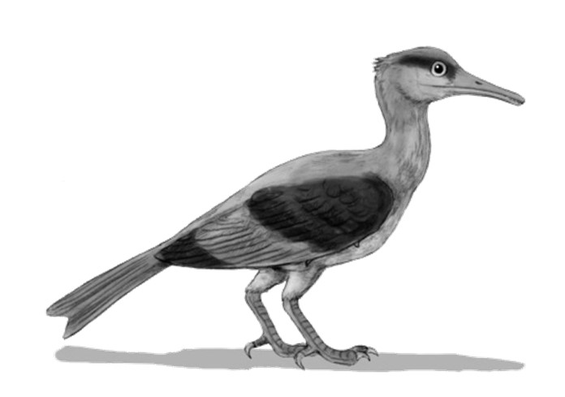

SUBCLASE PYGOSTYLIA
En esta subclase se han enmarcado las aves en que el número de vértebras de la región caudal es reducido; tienen huesos neumáticos y los miembros anteriores más modificados para el vuelo (aunque algunas presentan caracteres regresivos). Pertenecen a este grupo todas las aves actuales y la mayor parte de extintas. Incluye 4 ordenes extintos y 2 divisiones con 30 ordenes actuales:
†Orden Enantiornithes: Son un grupo de aves voladoras dentadas del Mesozoico, que algunos autores elevan al rango de sublcase, debido a la poca claridad taxonómica que aún posee el conjunto. Se les llama “aves opuestas”
debido a que la estructura de los huesos como la escápula y el coracoides están orientados de manera opuesta al de las aves modernas. Géneros representativos: †Longipteryx, †Noguerornis, †Avisaurus e †Iberomesornis.
†Longipteryx
†Orden Confuciusornithiformes: Son un conjunto de aves voladoras dentadas del Cretácico inferior de China. Poseían un par de plumas acintadas en la cola y por sus restos se sabe que tenían plumón y plumas con raquis.
Géneros representativos: †Confuciusornis y †Changchengornis.
†Confuciusornis
†Orden Hesperornithiformes: Incluye aves del Cretácico que tenían dientes implantados en un surco continuo en ambas mandíbulas. Los miembros anteriores estaban muy reducidos y el esternón carecía de quilla. Eran de hábitos acuáticos. Pescaban en aguas poco profundas y nidificaban en las zonas costeras. Sus restos sólo se han encontrado en el hemisferio norte.
Género representativo: †Hesperornis y †Baptornis.
†Hesperornis
†Orden Ichthyornithiformes: Son aves extintas con dientes que habitaron el hemisferio norte en el Cretácico supeior. Tenían miembros anteriores bien desarrollados y el esternón estaba provisto de quilla, por que se deduce que eran voladores. Eran el equivalente ecológico de las modernas aves marinas como pelícanos o pájaros bobos. Género representativo: †Ichthyornis.
†Ichthyornis

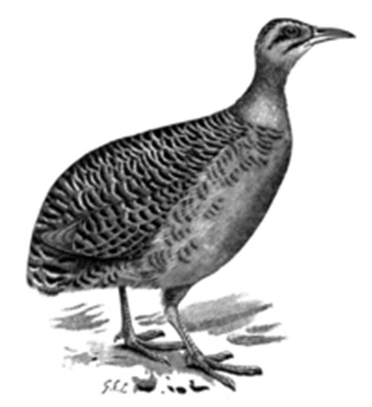

Superdivisión NEORNITHES
División Paleognathae
Caracterizado por ser aves primitivas no voladoras de cuellos y extremidades posteriores largos. Está constituida por 8 ordenes, 3 de los cuales son extintos.
†Orden Lithornithiformes: Son aves paleognathas primitivas. Poseían un cráneo con huesos relativamente libres (no fusionados). Vivieron en el Cretácico. Aparentemente mejores voladoras que las actuales paleognathas.
Encontradas en América del Norte y Europa. Géneros representativos:
†Lithornis
†Lithornis y †Paracathartes.
Orden Tinamiformes: (46 spp.) (Tinamúes, inamúes, martinetas) Aves con paladar primitivo y tres ó cuatro dedos libres, ya que el halux es rudimentario o nulo. Ponen huevos pigmentados de verde, azul, café, etc. Son esencialmente terrestres y habitan bosques neotropicales. Aunque son capaces de volar, lo hacen solamente cuando están en peligro. Género representativo: Tinamus.
Tinamus
†Orden Dinornithiformes: (Moas) Incluye aves desaparecidas que habitaban Nueva Zelanda con forma de avestruz y que alcanzaban 3 metros de altura. Tenían patas fuertes y gruesas, provistas de tres dedos normales y halux rudimentario. Miembros anteriores prácticamente ausentes. Género representativo: †Dinornis.
†Dinornis
Orden Rheiformes: (2 spp.) (Ñandúes) Llamados también avestruces americanos. Tienen alas un poco más grandes que los anteriores y tres dedos en las patas. La cabeza y el cuello cubiertos de plumas. Habitan únicamente en Sudamérica. Género único: Rhea.
Rhea
Orden Struthioniformes: (1 sp.) (Avestruz) Son las mayores aves vivientes.
En las extremidades posteriores tienen reducción en el número de dedos a dos y están provistos de callosidades en la superficie inferior a manera de pezuña.
Alas reducidas e inútiles para el vuelo. Cabeza y largo cuello desprovistos de plumas. Hay dimorfismo sexual en el plumaje. Los polluelos son nidífugos.
Struthio camelus es la única especie, es una veloz corredora y habita las zonas tropicales de Africa. Géneri único: Struthio.
Struthio
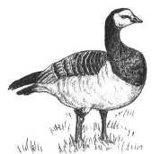


†Orden Aepyrnithiformes: (Aves elefante) Incluye aves cuyos restos se han encontrado en Madagascar del Pleistoceno al Reciente. Eran de grandes tallas, más o menos como los avestruces, pero mucho más pesadas. Carecían de miembros anteriores y los posteriores tenían tres dedos provistos de uñas fuertes y curvas. Los huevos eran muy grandes y de cascarón resistente.
Género representativo: †Aepyornis.
†Aepyornis
Orden Casuariiformes: (4 spp.) (Emúes, casuarios) Aves corredoras de alas rudimentarias. Tienen las extremidades inferiores relativamente menos largas que las de los avestruces y tres dedos provistos de uñas en cada pata; en los casuarios la uña del dedo central está más desarrollada. La cabeza y parte del cuello es desnudo. Los jóvenes son listados longitudinalmente. Habitan Australia y Nueva Guinea. Géneros representativos: Casuarius y Dromaius.
Dromaius
Casuarius
Orden Apterygiformes: (3 spp.) (Kiwis) Aves nocturnas de pequeña talla, ya que no exceden el tamaño de una gallina común. Alas sumamente reducidas, que sólo presentan un muñón exterior. Las patas tienen tres dedos bien desarrollados y un halux reducido. El pico es largo y curvado hacia abajo, y tienen numerosas barbas en las proximidades de los ojos. El cuello es muy corto. Habitan Nueva Zelanda. Género representativo: Apteryx.
Apteryx
División Neognathae
Enmarca a la gran mayoría de aves actuales y se caracterizan por tener especialización al vuelo o vida terrestre con degeneración secundaria de tales estructuras. Está compuesto de 28 ordenes.
Clado 1.1 Galloanserae
Orden Anseriformes: (165 spp.) (Patos, gansos, cisnes, añumas) Aves palmípedas con el pico deprimido, notable porque cada una de las mandíbulas tiene una serie de laminitas córneas transversales en el borde interno. En el ápice de la mandíbula superior, presentan un pequeño proceso unciforme dirigido hacia abajo, que abraza a la mandíbula inferior. El tarso generalmente es de menor longitud que el fémur, pero algunas veces suele ser igual o ligeramente mayor. Tienen cuatro dedos en las patas los tres anteriores con membranas interdigitales y garras bien desarrolladas. El halux es de menor tamaño e implantado un poco más arriba que los delanteros. Son en su mayoría migratorios. Géneros representativos: Branta y Anhima.
Branta


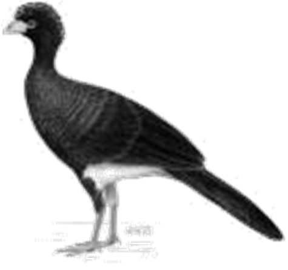

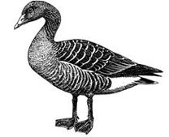
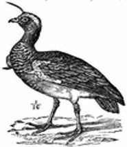
Anser
Anhima
Cygnus
Orden Galliformes: (285 spp.) (Gallinas, pavos, faisanes, urogallos, hocos, megapodios, perdices, codornices) Aves nidífugas cosmopolitas, poco voladoras, de alas cortas y redondeadas, cuya superficie interior de forma cóncava envuelve al cuerpo. Poseen patas fuertes, con cuatro dedos provistos de uñas débiles. El pico es relativamente corto y la mandíbula superior un poco mayor que la inferior, con las cavidades nasales confluentes, pues carecen de tabique intermedio. Notable dimorfismo sexual. Géneros representativos: Gallus, Crax y Meleagris.
Gallus
Crax
Tetrao
Meleagris
Clado 1.2 Neoaves
Clado 1.2.1 Metaves
Orden Podicipediformes: (22 spp.) (Somormujos) Son plantígrados y tienen 3 dedos en cada pata, provistos de membranas digitales separadas; el halux es rudimentario. Son malos voladores de cuello largo y pico puntiagudo. Son muy buenos buceadores. Género representativo: Podiceps.
Podiceps
Orden Phoenicopteriformes: (6 spp.) (Flamingos) Son aves sancudas tropicales y subtropicales con un pico especializado en la filtración.
Antiguamente clasificados dentro de los ciconiformes por su semejanza física, ahora se emparentan mas con los somormujos. Los dedos están unidos por una amplia membrana. Género representativo: Phoenicopterus.
Phoenicopterus
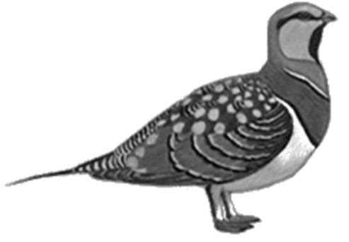


Orden Mesitornithiformes: (3 spp.) (Mesitos) Aves endémicas de Madagascar anteriormente clasificadas dentro de las Gruiformes. Son de tamaño pequeño y mediano y casi no vuelan. Su plumaje es de tonos parduzcos, más claro en las partes inferiores. Se encuentran en los bosques y zonas de arbustos, donde se alimentan de insectos y semillas. Dos especies monógamas y una polígama. Géneros representativos: Mesitornis y Monias.
Monias
Orden Pteroclidiformes (16 spp.) (Gangas) Aves de plumaje moteado, de franjas o listas críptico; se agachan en el suelo para no ser vistas. El cuerpo está cubierto de un plumón interno de color oscuro. Este plumón las protege de las temperaturas extremas del desierto. Poseen patas cortas y emplumadas.
Géneros representativos: Pterocles y Syrrhaptes.
Pterocles
Orden Columbiformes: (309 spp.) (Palomas, tórtolas, torcazas, huilotas) Las alas son grandes propias para vuelos prolongados. Pico mediano con cera notable y membranosa en la parte basal superior. Las patas cuentan con cuatro dedos bien desarrollados, el halux solo falta en algunas excepciones. Son afines a los chorlitos y las gaviotas por la anatomía del ala. Vegetarianas.
Beben agua sin levantar la cabeza como el resto de las aves. Géneros representativos: Columba, Zenaid, Columbina y Syrrhaptes.
Columba
Orden Otidiformes: (26 spp. ) (Avutardas y sisones) Son aves de hábitos principalmente terrestres y están asociadas a ambientes secos, abiertos y esteparios de Eurasia y África. Anteriormente clasificadas dentro de las Gruiformes. Son de tamaño grande y de hecho se incluyen aquí las aves voladoras más pesadas del mundo, superando los 20 kg en machos. Presentan un claro dimorfismo sexual en cuanto a tamaño, siendo los machos más grandes. Son omnívoras y anidan en tierra. Géneros representativos: Otis, Eupodotis y Afrotis.
Eupodotis
Orden Musophagiformes: (23 spp.) (Turacos) Antiguamente clasificadas dentro del orden Cuculiformes, los turacos son un grupo de aves africanas pequeñas y medianas, que presentan colores vívidos en su plumaje. Tienen alas redondeadas, pico ganchudo y pequeño, apto para consumir frutos, hojas y animales pequeños. Habitan en bosques tropicales perennifolios y el nombre del orden hace referencia al consumo de plátanos. Géneros representativos: Tauraco, Musophaga y Crinifer.
Tauraco


Orden Cuculiformes: (141 spp.) (Cucos,, garrapateros, correcaminos) Aves pequeñas o medianas, la mayor parte arborícolas, con cuatro dedos bien desarrollados provistos de garras. El halux y el dedo externo se dirigen hacia atrás en la mayoría de los géneros. En el resto del orden el dedo externo se dirige a voluntad, hacia delante y hacia atrás. Son de apariencia muy variada, presentan mimetismo con otras aves de órdenes diferentes, no sólo en forma sino en canto y hábitos. Existe en ellas cierto grado de parasitismo, consistente en que ponen sus huevos en nidos ajenos (Sólo en especies del Viejo Mundo).
Geococcyx
Son muy afines a los loros. Géneros representativos: Cuculus y Geococcyx.
Cuculus
Orden Aegotheliformes: (11 spp.) (Egotelos) Son pequeñas aves nocturnas emparentadas con los chotacabras, casi todos nativos de Nueva Guinea. Son insectívoros. Su blando plumaje es una mezcla de pardos y tonos mas claros que les ayuda mimetizarse. Las patas son pequeñas y débiles; pico pequeño, pero lo pueden abrir extraordinariamente, rodeado de filoplumas. Género representativo: Aegotheles.
Aegotheles
Orden Caprimulgiformes: (107 spp.) (Chotacabras, podarguitos, guácharos) Está formado por grupos poco homogéneos. Tienen en común el cráneo grande con cavidades orbitales amplias y ojos muy desarrollados. La abertura bucal es notablemente ancha, propia para capturar los insectos de los que se alimentan. El pico pequeño pero ancho tiene filoplumas en la base. Las patas son cortas y tienen 4 dedos, de los cuales el central es de mayor tamaño.
El plumaje es opaco, como es común en aves crepusculares. Géneros representativos: Podargus y Caprimulgus.
Podargus
Caprimulgus
Orden Apodiformes: (424 spp.) (Vencejos, colibríes, clejos) Son aves pequeñas que se distinguen por la notable reducción en la longitud del brazo y antebrazo, que permite gran movilidad de los miembros anteriores y por lo tanto, posibilidad de vuelo rápido. Las patas son muy cortas, con cuatro dedos provistos de garras bien desarrolladas y todos dirigidos hacia delante. Son excelentes voladores que habitan las zonas tropicales y subtropicales del mundo. Los colibríes son americanos. Géneros representativos: Apus y Archilochus.
Archilochus
Apus


Clado 1.2.2 Coronaves
Orden Opisthocomiformes: (1 sp.) (Hoatzin) Son aves herbívoras de Sudamérica. Tienen las dimensiones de un faisán con un cuello relativamente largo y cabeza pequeña. Una de las tantas peculiaridades de este orden es que tiene un sistema digestivo único dentro de las aves. Los hoatzines usan fermentación bacterial en la parte delantera del estómago para descomponer material vegetal que consumen, al igual que los rumiantes. El pollo se alimenta de materia regurgitada de los padres, y además posee garras con las que trepa a los árboles. Género único: Opisthocomus.
Opisthocomus
Orden Gruiformes: (171 spp.) (Grullas, pollas de agua, avutardas, tsurus, gallifochas, aves sol) Aves zancudas generalmente terrestres, de alas redondeadas, a veces poco funcionales y en ciertos casos atrofiadas. Las patas con 4 dedos bien desarrollados, pero el halux puede encontrarse reducido, rara vez nulo y siempre implantado en un plano superior a los otros dedos. En algunas familias se encuentran membranas interdigitales. Géneros representativos: Grus y Gallinula.
Gallinula
Psophia
Diatryma (+)
Grus
Orden Charadriiformes: (342 spp.) (Gaviotas, agachonas, ostreros, alcas, avocetas, avefrías, andarríos, págalos) Es uno de los órdenes más cosmopolitas y heterogéneos que existen. Son aves zancudas pequeñas o medianas, muy abundantes en riberas de ríos, lagos y costas. Poseen la glándula uropigial emplumada y alas bien desarrolladas. Géneros representativos: Alca, Larus y Vanellus.
Larus
Alca
Vanellus
Jacana
Orden Euripygyformes: (2 spp.) (Ave sol y kagu) Son aves esbeltas, malas voladoras, de plumaje luminoso y de hábitos crepusculares y más bien terrestres. Hasta hace poco eran clasificadas dentro del orden de las Gruiformes. El ave sol habita la América Tropical y el kagu es de Nueva Caledonia. Los dos géneros representados en el orden son: Eurypyga y Rhynochetus.
Eurypyga


Orden Phaethontiformes: (3 spp.) (Aves del trópico, rabijuncos) Son aves tropicales pelágicas de plumaje predominantemente blanco. Poseen una cola de plumas elongadas y patas cortas con pies pequeños. Su pico es largo, fuerte y con un ligero recurvamiento. Cabeza grande con cuello corto. Antiguamente clasificadas dentro de los Pelecaniformes. Género único: Phaethon.
Phaethon
Orden Gaviiformes: (5 spp.) (Colimbos, zambullidores) Son aves acuáticas, plantígradas de cuerpo muy alargado; con los miembros inferiores colocados en posición muy posterior; en cada pata tienen 3 dedos unidos por una membrana interdigital y el halux es rudimantario. El pico es en forma de cono muy alargado y puntiagudo. Son muy buenos nadadores y buceadores.
Género representativo: Gavia.
Gavia
Orden Procellariformes: (125 spp.) (Albatros, fulmares, petreles) Son aves marinas de amplia distribución en litorales tropicales y templados; tienen el pico cubierto de numerosas piezas córneas cuyas líneas de sutura fácilmente se notan. Los orificios nasales, están bien separados y dispuestos en el ápice de pequeños tubos. Las alas de estas aves son grandes y las patas presentan tres dedos unidos por membranas; el halux es rudimentario o nulo. Géneros representativos: Diomedea y Pelecanoides.
Diomedea
Pelecanoides
Orden Sphenisciformes: (17 spp.) (Pingüinos, pájaros bobos o niños) Alas modificadas para la natación subacuática, las patas con tres dedos anteriores unidos por una membrana y un halux rudimentario. Posición erecta del cuerpo. Cuerpo cubierto de plumón espeso y compacto sin apterilia (zonas sin cobertura). Distribución preferentemente polar austral, aunque algunas especies habitan zonas tropicales. 17 especies. Géneros representativos: Spheniscus, Aptenodyptes y Eudyptes.
Spheniscus
Orden Pelecaniformes: (106 spp.) (Pelícanos, garzas, íbices, picozapato) Son aves palmípedas ó zancudas, en las que tanto los tres dedos anteriores como el halux están unidos por membranas amplias o escotadas. Son de amplia distribución geográfica, habitando costas y regiones lacustres y fluviales. Géneros representativos: Pelecanus, Egretta, Eudocimus.
Eudocimus
Ardea
Pelecanus


Orden Suliformes: (53 spp.) (Pájaros bobos, cormoranes, rabihorcados, alcatraces, aningas) Son aves costeras y limícolas, normalmente con amplias membranas en las patas. Incluye aves consideradas como las mejores voladoras de toda la clase. El gran tamaño relativo de las alas y de los sacos aéreos les da enorme resistencia para el vuelo. Son de amplia distribución geográfica. Géneros representativos: Sula, Anhinga y Fregata.
Anhinga
Fregata
Sula
Orden Ciconiiformes: (19 spp.) (Cigüeñas,jabirús, marabú) Aves zancudas relativamente corpulentas, con alas grandes y alargadas y el cuello también largo. El pico, por lo general, es alargado. Presentan 4 dedos libres, los tres anteriores unidos solamente en la base por membranas muy pequeñas. Viven en las aguas someras a la orilla de los ríos y lagunas y anidan en los árboles.
Su alimentación es principalmente de peces, anfibios y otros animales acuáticos. Géneros representativos: Jabiru, Leptoptilos y Ciconia, Ciconia
Jabiru
Leptoptilos
Orden Accipitriformes: (259 spp.) (Aguilas, aguilillas, buitres, secretarios, pigargos, zopilotes) Aves de presa diurnas y nidícolas, en las que el pico, muy fuerte, está especializado para desgarrar la carne de sus víctimas, el ápice de la mandíbula superior abraza a la inferior. Los orificios nasales se abren en una cera membranosa. Las alas son grandes y de gran capacidad elevadora.
Las patas tienen cuatro dedos bien desarrollados y con garras potentes. Ponen pocos huevos, que incuban largo tiempo. Géneros representativos: Aquila, Buteo, Cathartes y Sagittarius.
Aquila
Pandion
Buteo
Haliaeetus
Saggitarius
Cathartes
Gyps


Orden Strigiformes: (205 spp.) (Búhos, lechuzas, mochuelos) Son aves rapaces nocturnas. Son semejantes a las falconiformes, pero se distinguen de ellas en caracteres estructurales del esqueleto y en el plumaje. El dedo externo siempre es reversible. Las cavidades orbitales son bastante amplias y los ojos dirigidos hacia delante. Esta circunstancia se acentúa porque el plumaje que circunda las órbitas, forma a manera de discos cuyo centro es la pupila y hace que el pico se vea de menor tamaño que el que tiene en realidad. La cola es corta y las alas bien desarrolladas. Vuelan silenciosamente y se alimentan de presas vivas. Las partes indigeribles del alimento, como huesos y plumas, se Tyto
devuelven por la boca, formando una masa denominada egagrópila. Viven solitarias o en parejas. Tienen distribución cosmopolita. Géneros representativos: Bubo y Tyto.
Bubo
Orden Coliiformes: (6 spp.) (Pájaros ratón) Son aves de tamaño mediano, frugívoras, no migratorias que habitan los bosques de Africa y Madagascar.
Son gregarias y acróbatas del ramaje que suelen colgarse panza arriba. Están dotadas de una prominente cresta, cola larga y estrecha y dedo pulgar Colius
reversible. Género representativo: Colius.
Orden Leptosomiformes: (1 sp.) (Carraca curol) El orden incluye una sola especie de ave, antiguamente ubicada dentro de los Coraciiformes.
Presentan dimorfismo sexual; anidan en túneles y se alimentan de insectos.
Son aves forestales que habitan Madagascar y el archipiélago de las Comoras. Género: Leptosomus.
Leptosomus
Orden Trogoniformes: (37 spp.) (Quetzales, pájaros bandera, coas) Son aves de distribución muy amplia en casi toda la zona tropical del globo. Se distinguen por la disposición peculiar de sus dedos: el primero y el segundo están dirigidos hacia delante, movidos por el flexor del halux, el tercero y el cuarto quedan dirigidos hacia atrás. Géneros representativos: Trogon y Pharomachrus
Pharomachrus.
Trogon
Buceros
Orden Bucerotiformes: (74 spp.) (Cálaos, tocos y abubillas) Aves que habitan Eurasia y África; antes clasificadas dentro de los Coraciiformes.
Presentan tamaños medianos y grandes, buenas voladoras con alas elípticas.
Viven en zonas forestales, principalmente tropicales. Anidan en huecos de los árboles. Algunas presentan picos masivos pero ligeros. Géneros representativos: Buceros, Aceros, Bucorvus y Upupa.
Upupa


Orden Coraciiformes: (131 spp.) (Martín pescador, abejarucos, momotos, cimitarras) Es un grupo heterogéneo de aves que anidan en cavidades de los árboles, grietas de muros, rocas, muros, galerías subterráneas y otros medios Momotus
parecidos. Las patas presentan siempre cuatro dedos, los delanteros soldados en una extensión más o menos prolongada de la parte proximal. El halux rara vez es independiente, pues su tendón flexor está unido al de los otros dedos.
Ponen huevos de color uniforme, casi siempre blancos. Son nidícolas y nacen desprovistos de plumón. Géneros representativos: Alcedo, Ceryle, Megaceryle, Momotus.
Alcedo
Orden Piciformes: (403 spp.) (Pájaros carpinteros, tucanes, barbudos, gran indicador) Aves que presentan en las patas dos dedos hacia delante y dos hacia atrás. El halux y los dedos 2 y 4 se mueven por un tendón común y sólo el tercer dedo tiene tendón aislado. Son malos voladores. Arborícolas generalmente solitarias. Géneros representativos: Picus y Ramphastos.
Ramphastos
Dryocopus
Capito
Orden Cariamiformes: (2 spp.) (Seriemas, Chuñas) Aves de un linaje antiguo, habitantes de Sudamérica y emparentadas cercanamente con las extintas aves del terror, así como los halcones y los pájaros. Son depredadoras oportunistas de pequeñas presas y habitan zonas abiertas de Brasil, Bolivia, Paraguay y Argentina. Corren en lugar de volar, aunque pueden levantar el vuelo por distancias cortas. Géneros: Cariama y Chunga.
Cariama
Orden Falconiformes: (64 spp.) (Halcones verdaderos, carnícalos, caracaras) Aves de presa diurnas y nidícolas, que matan a sus presas con el pico, ya que poseen el “diente de halcón”, una proyección del borde del pico supeior. Los orificios nasales se abren en una cera membranosa. Las alas son de alta capacidad elevadora y pueden llegar a grandes velocidades. Las patas tienen cuatro dedos bien desarrollados y con garras potentes. Géneros representativos: Falco, Ibycter y Caracara.
Falco
Ibycter
Caracara


Orden Psittaciformes: (356 spp.) (Loros, guacamayas, cacatúas, papagayos, keas) Aves muy derivadas con el cráneo esférico y voluminoso. La mandíbula superior se articula a los frontales y es capaz de moverse, la inferior truncada en la parte distal, queda completamente abrazada por la superior. Tienen cera grande y cubierta de plumas, la lengua es carnosa y tienen 4 dedos, dos hacia delante y dos hacia atrás (zigodáctilos). La mayor parte habita en los trópicos del hemisferio sur. Viven muchos años, algunas hasta 80. Géneros representativos: Kakatoe, Ara, Psittacula y Amazona.
Ara
Amazona
Orden Passeriformes: (5,899 spp.) (Pájaros: golondrinas, canarios, alondras, cenzontles, cardenales, pitas, saltarines, etc.) Es el más extenso de los órdenes, ya que incluye más de la mitad de todas las especies de aves. Son generalmente de pequeño tamaño y muchos presentan un plumaje llamativo y canto. En las alas presentan de 9 a 10 remeras y una sola serie de coberteras primarias. Los tarsos cortos y desnudos, y las patas, siempre con 4 dedos, tres dirigidos hacia delante y uno hacia atrás. El halux casi siempre con tendón independiente y garra mayor que la del dedo mediano. Son nidícolas y nacen desnudos y sin poder abrir los ojos. El régimen alimenticio es muy variado, aunque principalmente son insectívoros, frugívoros y granívoros. Géneros representativos: Hirundo, Menura y Alauda.
Hirundo
Pyrocephalus
Passer
Furnarius
Corvus
Paradisaea
Menura
Álvarez del Villar, J. 1977. Los cordados: origen, evolución y hábitos de los vertebrados.
CECSA. México.
Benton, M. J. 2014. Vertebrate Palaeontology. Blackwell SC. United Kingdom.
Bernis, F. 1997. La clase Aves: un recorrido biológico por la taxonomía. Editorial Complutense. España.
Burnie, D. & D. E. Wilson. 2001. Animal: the definitive visual guide to the worldś wildlife.
DK. U.S.A.
Dahiya, N. 2017. Vertebrate zoology. New York Arcler Press. United States of America.
Gill, F. B. 2006. Ornithology. W.H. Freeman. U.S.A.
Harris Harris, T. (Ed.). 2009. Complete Birds of the World: Featuring every bird family worldwide, with more than 900 illustrations, photographs, and maps. National Geographic. United States of America.
Hickman, C. P. (Jr), L. S. Roberts y F. M. Hickman. 2015. Zoología: principios integrales.
Interamericana-Mc Graw Hill. España.
Kardong, K. V. 2014. Vertebrados: anatomía, comparada función, evolución. Mc Graw Hill. España.
Muñoz, C. I. E., Rendón y O. López. 2016. Colecta y conservación de muestras de fauna silvetre en condiciones de campo. UAM. México.
Parker, T. J., W. A. Haswell y J. Nadal. 1991. Zoología: Cordados. Reverté. España.
Romer, A. S. y T. S. Parsons. 1981. Anatomía comparada. Interamericana. México.


Sección 20
Los
sinápsidos
características
†Clase: SYNAPSIDA
Es una clase de animales que incluye tetrápodos extintos muy cercanamente emparentados a los mamíferos. Según algunos autores, deberían estar incluidos los mamíferos mismos, pero, para fines prácticos, se ha mantenido la Clase Mammalia de manera independiente. Tradicionalmente los sinápsidos han sido descritos como reptiles mamiferoides o protomamíferos. Los sinápsidos son uno de los dos grandes grupos de amniotas (el otro es el de los saurópsiodos) en los que se diversificaron los amniotas primitivos. Pueden distinguirse por una abertura simple en el cráneo detrás de cada ojo (fenestra temporal). Los primeros sinápsidos aparecieron hace 324 millones de años durante el Carbonífero superior.
Algunos sinápsidos eran endotermos y las velas dorsales de algunos pelicosaurios probablemente contribuían a regular su temperatura corporal. Poseían piel glandular carente de escamas, aunque algunos pelicosaurios conservaron las escamas de los tetrápodos más primitivos en su parte ventral. Dichas escamas, como el pelo o las plumas, no tenían la misma estructura que las típicas escamas reptilianas. Se desconoce en qué momento adquirieron características mamalianas como el pelo o las glándulas mamarias ya que los fósiles raramente proporcionan evidencias de los tejidos blandos. No obstante, pueden deducirse muchos datos a partir del esqueleto. Así, los sinápsidos más primitivos tenían un aspecto de "lagartos desnudos", sin escamas ni pelo, y su aspecto general era más similar al de los actuales lagartos que al de los mamíferos modernos. Por otra parte, la presencia de un paladar secundario, de patas dispuestas verticalmente bajo el cuerpo y la estructura de la mandíbula inferior de los cinodontos, sugieren que muchas características mamalianas, incluyendo una capa de pelo, habían aparecido ya en estos sinápsidos del Pérmico superior. Hoy se sabe, gracias a impresiones halladas bajo los restos fósiles, que algunos terápsidos tenían pelo. Thrinaxodon, un cinodonto del Triásico, poseía un paladar secundario completo y hay evidencias de que poseía vibrisas.
Los sinápsidos fueron los primeros tetrápodos en poseer varios tipos de dientes, como incisivos, caninos y molares. Los primitivos sinápsidos tenían varios huesos en la mandíbula inferior, que fueron reduciéndose en número y en tamaño en el curso de su evolución hasta convertirse en los huesecillos que forman el oído medio de los mamíferos y quedar solo el hueso dentario como componente de la mandíbula. De hecho, cuando no se tienen evidencias de las partes blandas, los mamíferos quedan definidos como vertebrados con un único hueso en la mandíbula inferior, el dentario, que se articula con el escamosal; los demás huesos forman parte del mecanismo del del oído medio (el angular forma el hueso timpánico, el articular corresponde al (martillo) y el cuadrado de la mandíbula superior, al (yunque); el estribo estaba ya presente en el oído reptiliano.


DIVERSIDAD Y TAXONOMÍA
†CLASE SYNAPSIDA
Se caracterizan porque en el cráneo hay un orificio temporal a cada lado, bordeado en el límite superior por el postorbital y el escamoso. Incluye dos órdenes:
†Orden Pelycosauria: Fueron los primeros sinápsidos y aparecieron al final del Carbonífero. Al principio eran formas pequeñas, pero luego evolucionaron hacia grandes animales. El cráneo tiende a hacerse más alto y estrecho y las órbitas oculares más grandes. Algunos poseían grandes aletas dorsales. Se sospecha que desarrollaron mecanismos de regulación de la temperatura.
Desaparecieron a finales del Pérmico. Géneros representativos: †Dimetrodon y †Edaphosaurus.
†Ophiacodon
†Dimetrodon
†Edaphosaurus
†Orden Terapsida: Eran reptiles sinápsidos avanzados y fueron los antepasados directos de los mamíferos. Aparecieron a mediados del Pérmico y desaparecieron n el Triásico siendo en este lapso los reptiles dominantes. La fosa temporal aumenta de tamaño en el curso de la evolución y simultáneamente se desplaza hacia lo bóveda craneal. Probablemente eran homeotermos y poseían pelo. Géneros representativos: †Moschops,
†Lystrosaurus y †Cygnognathus.
†Lystrosaurus
†Massetognathus
†Cynognathus
†Procynosuchus
Benton, M. J. 2014. Vertebrate Palaeontology. Blackwell SC. United Kingdom.
Carroll, R. L. 1988. Vertebrates paleontology and evolution. Freeman. USA.
Dahiya, N. 2017. Vertebrate zoology. New York Arcler Press. United States of America.
Feldhamer, G. A., L. C. Drickamer, S. H. Vessey, J. F. Merritt and C. Krajewski. 2007.
Mammalogy: Adaptation, Diversity and Ecology. Johns Hopkins. U.S.A.
Hickman, C. P. (Jr), L. S. Roberts y F. M. Hickman. 2015. Zoología: principios integrales.
Interamericana-Mc Graw Hill. España.
Kardong, K. V. 2014. Vertebrados: anatomía, comparada función, evolución. Mc Graw Hill. España.
Lira I., E., C. Mudespacher y B. García. 1994. Theria: Diccionario de Mamíferos. AGT
Editores. México.


Sección 20
Los
mamíferos
características
CLASE: MAMMALIA
Latín: mamma, pecho o teta.
CARACTERÍSTICAS:
Tegumento provisto de glándulas sudoríparas, odoríferas, sebáceas y mamarias
Cuerpo cubierto de pelo (con reducción secundaria en algunos casos)
Arco aórtico izquierdo
Tres huesos en el oído medio
Diafragma muscular
Cráneo con dos cóndilos occipitales
Siete vértebras cervicales por lo general
Dentición heterodonta
Mandíbula inferior formada por un solo hueso
Párpados móviles y oído externo carnoso
Corazón tetracavitario y eritrocitos no nucleados
Endotérmicos
Cloaca sólo en monotremas
Sexos separados
Machos con órgano copulador
Fecundación interna
MORFOLOGÍA Y ANATOMÍA DE LOS MAMÍFEROS
Morfología corporal
En los mamíferos terrestres las patas levantan el cuerpo del suelo sin acodamiento (como en el caso de los reptiles). Generalmente poseen una cola larga, pero este rasgo, como otros, son muy variables dentro de la Clase. Es notable la presencia de orejas que representan junto con el conducto auditivo externo el llamado oído externo, ausente en los demás vertebrados. Los orificios nasales o narinas se encuentran cercanos entre sí y colocados en el extremo del rostro, que es largo.
Muchos mamíferos presentan en la cara pelos gruesos y largos, llamados vibrisas, que tienen funciones táctiles.
En general, la piel de los mamíferos es más gruesa que en cualquier otra clase de vertebrados. La dermis es mucho más gruesa que la epidermis, siendo ésta relativamente fina donde está cubierta de pelo, pero en zonas en donde está sujeta a mucho contacto y desgaste (como en palmas y callosidades) sus capas se espesan y queratinizan.
La piel se encuentra generalmente cubierta por el pelo, que es una estructura exclusiva de esta clase (para representantes actuales). Como glándulas de la piel se encuentran las sebáceas, las sudoríparas y las glándulas mamarias. Estas últimas se presentan en número par relacionado con el número de crías, y terminando en un pezón. Las escamas sólo se presentan en la cola de algunos mamíferos o en el caparazón de los armadillos.
Pelo: un pelo es algo más que una fibra de queratina. Está formado por tres capas: la médula o canal central, la corteza con los gránulos de pigmentos próximos a la medula y la cutícula externa compuesta de escamas imbricadas. El pelo de diferentes mamíferos presenta una considerable variabilidad de estructura. Puede ser deficiente en corteza (ciervos), o deficiente en médula (pelos huecos del glotón utilizados para forrar las pezuñas de animales de tiro por resistir la congelación). En el caso de las ballenas, el pelo está reducido únicamente a unas pocas cerdas cerca de la boca. Un pelo crece a partir de un folículo, el cual, aunque se trata de una estructura epidérmica, se hunde en la dermis. El pelo crece continuamente por una rápida proliferación de células en el folículo. A medida que el eje del pelo es empujado hacia arriba, nuevas células son apartadas de su fuente de alimento y mueren, convirtiéndose en el mismo tipo denso de queratina que constituye las garras, uñas, pezuñas y plumas.
Los mamíferos presentan característicamente dos tipos de pelos formando el pelaje: 1) Borra, densos y suaves pelos aislantes de calor y 2) Jarra, pelos más rígidos y largos (cerdas) que sirven de protección contra en desgaste y dan coloración al pelaje. En las focas, la borra es tan densa que no se moja.
En muchos mamíferos, como el humano, los cabellos son reemplazados continuamente. En otros casos el cambio de pelo es estacional. Los pelajes blancos de los mamíferos árticos en invierno (leucromía) son un ejemplo. Fuera de los polos, el pelaje es de coloraciones discretas. Algunas modificaciones de los pelos son: 1) vibrisas (bigotes) son pelos sensoriales que proporcionan un sentido táctil; en animales nocturnos están más desarrolladas. 2) espinas, que las presentan puercos espines, erizos y equidnas.
Cuernos y astas: Se pueden observar cuatro tipos de cuernos o estructuras afines. 1) Cuernos verdaderos, que son vainas huecas de epidermis queratinizada, que se disponen alrededor de una matriz de hueso que surge del cráneo. Los poseen muchos rumiantes como los bóvidos. 2) Astas, son totalmente córneas y duras cuando están en su fase madura. Las presentan los cérvidos y son estacionales. 3) Cuernos pilosos, que son fibras córneas de aspecto de pelo que se originan en papilas dérmicas, y son cementadas juntas; las poseen los rinocerontes. 4) Protuberancias, que son proyecciones del cráneo, de naturaleza ósea y cubiertas de piel; los poseen las jirafas.
Glándulas: Los mamíferos tienen la mayor variedad de glándulas tegumentarias. La mayor parte de estas entran dentro de 4 categorías:
1. Glándulas sudoríparas: son tubulares simples y altamente plegadas. Aparecen en muchas partes del cuerpo. Se distinguen dos tipos: 1) Glándulas ecrinas, que segregan un sudor acuoso que, cuando se evapora sobre la superficie de la piel, absorbe el calor. Aparecen en zonas carentes de pelo. Pueden faltar en roedores, ballenas, conejos y otros. 2) Glándulas apocrinas, son mayores y tienen los tubos más largos y retorcidos. Su región secretora se localiza en la subdermis.
Siempre desembocan en un folículo piloso o donde haya habido uno. Su secreción no es acuosa sino lechosa. En los humanos se encuentran en las axilas, zona púbica, pechos, oído externo, etc. No tienen que ver con la regulación térmica, más bien en determinados aspectos del ciclo sexual.
2. Glándulas odoríferas: existen prácticamente en todos los mamíferos, variando su localización y funciones. Son utilizadas en la comunicación de la misma especie para marcar territorios, para señales de aviso y para defensa. Pueden encontrarse en regiones orbitarias e interdigitales (ciervos), por detrás de los ojos (roedores), región prepusial (cánidos), y región anal (mofetas), entre otros.
3. Glándulas sebáceas: están íntimamente asociadas a folículos pilosos, aunque algunas son libres y se abren directamente al exterior. El tapizado celular de la glándula misma se descarga durante el proceso de secreción, por lo que tiene que ser renovado. Pueden dilatarse y expelirse como sebo y sirve para mantener en buenas condiciones al pelo. La mayor parte de los mamíferos las poseen en todo el cuerpo.
4. Glándulas mamarias: pueden tratarse de glándulas apócrinas ó sebáceas modificadas. Aparecen en todas las hembras de mamíferos y en forma rudimentaria en todos los machos. Se desarrollan como un engrosamiento de la epidermis que forma una línea mamaria a lo largo de ambos lados del abdomen en el embrión. En ciertas partes de estas crestas aparecen mamas, mientras que en las partes intermedias la cresta desaparece totalmente.
Generalmente se desarrollan e hinchan en el embarazo y la lactancia.
Endoesqueleto
El cráneo presenta una gran reducción de huesos con respecto al de los reptiles. Como ejemplo de un hueso que resulta de la reducción de varios, está el temporal, que además incluye al oído interno y medio. El cráneo, además presenta una fosa temporal de cada lado para aumentar la superficie de inserción de los músculos de la mandíbula. La mandíbula de los mamíferos se reduce a un solo hueso. La columna vertebral presenta un número determinado de vértebras para cada región: siete en la región cervical (perezosos 6 ó 9 y sirenios 6), doce en la torácica, siete en la lumbar y un número variable en las regiones sacra y caudal. Las torácicas sostienen las costillas que se articulan ventralmente con el esternón. Las vértebras sacras se articulan para formar el hueso sacro en algunos mamíferos. En el esqueleto apendicular no se encuentran modificaciones notables al patrón estructural de los tetrápodos, con excepción de la fusión de la escápula y el coracoide en el llamado omóplato.
Los mamíferos poseen heterodoncia, es decir, diferencia entre las piezas dentarias. Como carácter primitivo existe 4 tipos de dientes: incisivos (i), caninos (c), premolares (p) y molares (m); aunque algunas formas presentan disminución o pérdida de algún elemento. La dentición de los mamíferos es difiodonta en la mayoría de los casos. Los incisivos, caninos y premolares que forman la llamada dentición de leche por aparecer en la primera edad de los individuos, son empujados hacia fuera por una segunda serie de piezas dentarias que las substituyen una a una.
Los molares, por otra parte, sólo aparecen en la segunda dentición. La forma de los molares y premolares es muy importante en la clasificación de los mamíferos; de acuerdo con la conformación de la superficie de contacto entre las piezas de los maxilares y de las mandíbulas, se distinguen tres clases básicas:
1. Bunodonto: si las protuberancias son romas o agudas, pero aisladas.
2. Lofodonto: si las cúspides se unen y forman crestas continuas.
3. Selenodonto: si la superficie de contacto está dotada de crestas semilunares aproximadamente paralelas.
El tipo primitivo de los dientes en los mamíferos es el bunodonte (trituberculado). Esto es, con tres cúspides en cada diente, colocadas como en los vértices de un triángulo equilátero. Se estima que el número de piezas componentes de una dentición típica o completa (primitiva) es de 3 incisivos, 1 canino, 4 premolares y 3 molares por hemimandíbula. Los componentes dentarios existentes en determinada especie se expresan en fórmulas dentarias. Cada fórmula dentaria expresa el número de piezas dentarias existentes en cada lado del cráneo, indicando el tipo de diente y la posición (superior o inferior) Por ejemplo, la fórmula dentaria del tipo primitivo será: 3
1
4
3
i ---- c ---- p --- m ----
3
1
4
3
Las letras indican la clase de diente, y los quebrados, en el numerador señala cuántas piezas hay de esa clase en cada lado de la mandíbula superior. El denominador se refiere a la mandíbula inferior. La fórmula dentaria del humano sería i 2/2 c 1/1 p2/2 m 3/3. Para indicar una determinada pieza dentaria se escribe la literal que indica el tipo con mayúscula si está en la mandíbula superior o con minúscula si está en la inferior, seguida del número que le corresponde a la pieza contándolas de atrás hacia delante. Por ejemplo, la muela del juicio de la mandíbula superior en el humano se expresaría: M3.
Sistema muscular
Al igual que en las aves, la musculatura más importante es la apendicular, que en los mamíferos está relacionada con la capacidad de caminar, correr o saltar, y en algunos casos volar.
A diferencia de los demás vertebrados, en esta clase se encuentran muy desarrollados los músculos dérmicos, los cuales pueden producir movimiento de la piel, pelos, cara, etc.
Sistema digestivo
La boca tiene los labios móviles en la mayoría de los miembros de esta clase. A la cavidad bucal se comunican las glándulas salivales, las cuales son las parótidas, las sublinguales y las submaxilares. La secreción producida humedece las partes de la cavidad bucal, ayuda en la
deglución y contiene una enzima que digiere los carbohidratos. La lengua está bastante desarrollada y porta los pequeños órganos del gusto muy especializados en los mamíferos. El esófago conduce el alimento al estómago, el cual tiene especialización de acuerdo con el hábito de alimentación correspondiente; por ejemplo, en los rumiantes está formado por varias cámaras. El intestino delgado y el grueso están bien desarrollados, así como el hígado y el páncreas. En los mamíferos no existe cloaca, a excepción de los monotremas.
Sistema respiratorio
Los pulmones son los únicos órganos donde se lleva a cabo el intercabio gaseoso, y por tal razón se encuentran bien desarrollados. El aire entra por las narinas a las cavidades nasales en las que se encuentra el epitelio olfatorio y de las cuales pasa a la faringe. La cavidad nasal está separada de la bucal por el paladar secundario, que no está bien desarrollado en el resto de vertebrados. De la faringe el aire pasa a la laringe, que presenta una tapa que impide el paso de alimento a la tráquea, llamada epiglotis, exclusiva de esta clase. La laringe está formada por tres piezas esqueléticas. De ahí pasa a la tráquea, los bronquios, los bronquiolos y los alveolos.
Sistema circulatorio
Poseen corazón tetracavitario con una consecuente separación de la sangre arterial y venosa (esto es una evolución convergente de cocodrilos y aves). De la misma manera que las aves suprimen el arco sistémico izquierdo y mantienen el derecho, los mamíferos suprimen el derecho y mantienen sólo el arco sistémico izquierdo conectando el corazón con la aorta dorsal. Un cuerpo aórtico quimiorreceptivo se desarrolla en la pared del arco sistémico (aórtico). Es un pequeño órgano sensitivo que indica los niveles de oxígeno en la sangre, suplementando al par de cuerpos carotideos de todos los tetrápodos, los cuales aparecen en las paredes de la arteria carótida al servicio de la cabeza y el cerebro.
Sistema urogenital
Presentan un riñón metanefro. La orina es colectada por los cálices menores, pasando luego al cáliz mayor y de este al uréter. Cada uréter llega a la vejiga y de ahí a la uretra. Esta es urogenital en machos y exclusivamente urinaria en hembras. La uretra en machos se encuentra en el órgano copulador. Los testículos generalmente se encuentran fuera de la cavidad abdominal envueltos en el escroto. Los testículos se conectan al epidídimo y éste a los conductos deferentes (que se unen a la uretra, junto con la vesícula seminal). Los ovarios se encuentran en la parte dorsal de la cavidad abdominal y cerca de ellos se abre el infundíbulo (abertura del oviducto). Este está modificado en dos trompas de Falopio, las que se unen para formar el útero, que a su vez, se continúa en la vagina que se abre al exterior.
Sistema nervioso
El sistema nervioso es mucho más complejo en los mamíferos que en el resto de los vertebrados. El encéfalo tiene un desarrollo tal que necesita plegarse dentro de la cavidad craneana, siendo notables las circunvoluciones de la corteza cerebral, es decir, los hemisferios cerebrales son más desarrollados.
Los órganos sensoriales más desarrollados en los mamíferos son el olfato y la audición. La superficie del epitelio olfatorio es muy amplia y éste se encuentra localizado en la parte dorsal de las cavidades nasales. Los ojos son de desarrollo normal. La mayor parte de los mamíferos no distinguen los colores. La parte encargada de la audición en estos vertebrados es la llamada cóclea o caracol, que en los demás tetrápodos es una estructura recta y corta llamada lagena. Otros órganos sensoriales son de estructura simple y captan tipos de estímulos como el frío, calor, dolor, presión, gusto, etc.
ASPECTOS FISIOLÓGICOS Y DE ADAPTACIÓN
Alimentación
Los mamíferos, al igual que otras clases de vertebrados, presentan 4 tipos de especializaciones alimenticias (con sus respectivas variantes): 1. Herbívoros: los que basan su alimentación en vegetales. Existen dos tipos: los que ramonean (ungulados) y los que mordisquean (conejos y roedores). Presentan un gran desarrollo de incisivos y molares y una atrofia de los caninos. A los redores les crecen los incisivos toda la vida. Los herbívoros presentan una serie de adaptaciones para degradar la celulosa: los rumiantes tienen cámaras de fermentación habitadas por una gran cantidad de bacterias que se encargan de cortar las cadenas de celulosa; los conejos y los caballos tienen un ceco o ciego que también funciona como cámara de fermentación y absorción. Algunos roedores y lagomorfos realizan la coprofagia, que consiste en comer sus propias heces para optimizar la digestión y el aprovechamiento de la materia vegetal. En general, los herbívoros requieren grandes cantidades de alimento: un elefante de 6 toneladas requiere al menos 135 kg de materia vegetal al día.
2. Carnívoros: se alimentan de herbívoros. Se incluyen en el grupo: felinos, cánidos, focas, mustélidos, etc. Están equipados con grandes caninos y molares y premolares modificados, así como con garras y extremidades poderosas. El alimento es más fácil de digerir y requieren comer con menos frecuencia, lo que les da tiempo para jugar y aprender (gran desarrollo de la inteligencia).
3. Omnívoros: que consumen alimentos animales y vegetales (cerdos, mapaches, osos, ratas, algunos monos, etc. Generalmente son oportunistas estacionales o simplemente explotan el recurso que está más a su alcance.
4. Insectívoros: sobreviven principalmente consumiendo larvas e insectos (topos, musarañas, osos hormigueros, mirmecobios y la mayor parte de los murciélagos). La categoría no está bien definida porque algunos herbívoros y carnívoros comen ocasionalmente insectos, y los insectívoros se alimentan de otros invertebrados.
Al igual que en las aves, la relación entre la masa corporal y el metabolismo es inversa. A menor peso (y superficie corporal), mayor demanda alimenticia proporcional. Un ratón de 3 g consumirá, por gramo de peso, 5 veces más comida que un perro de 10 kg y 30 veces más que un
elefante de 5,000 kg. Por esta razón, los mamíferos pequeños pasan mucho más tiempo cazando y buscando alimento que los grandes mamíferos. Una musaraña puede morir de hambre en pocas horas si no hay suficiente alimento. Un puma, en cambio, puede durar días sin alimentarse y permanecer sano.
Reproducción
La mayor parte de los mamíferos tiene estaciones de crían bien definidas y acopladas para coincidir con la época más favorable del año. La etapa en la que una hembra es fértil se denomina estro o celo.
El ciclo estral está dividido en las siguientes etapas:
1. Proestro: ó período de preparación, es el momento en que crecen los folículos ováricos.
2. Estro: la vagina se prepara para la cópula y entran en juego las feromonas. Acontece la ovulación y la fecundación, siguiendo con la preñez.
3. Metaestro: si no ocurre la fecundación, el útero entra en una fase de reparación interna.
4. Diestro: el útero se hace pequeño y anémico, es decir, se queda sin irrigación sanguínea normal, y posteriormente comienza un nuevo ciclo.
La frecuencia de los ciclos estrales varía con las especies. Los animales que solo tienen un estro en la época de cría se llaman monoestricos (cánidos y quirópteros); los que tienen un estro recurrente en la estación de cría se denominan poliéstricos (ratones de campo y ardillas). Los antropoides y el humano presentan un ciclo diferente, la menstruación, que consiste en la expulsión del tapizado uterino y algo de sangre después de cada periodo postovulatorio.
Existen en los mamíferos tres patrones básicos de desarrollo embrionario: Ovíparos: este patrón lo presentan los monotremas actuales y posiblemente algunos mamíferos fósiles primitivos. Los huevos ovulados son fecundados en el oviducto. A medida que descinden por el oviducto, varias glándulas agregan albúmina y después una fina y coriácea cáscara de huevo. En el caso del ornitorrinco generalmente son dos huevos puestos en un nido e incubados durante 12 días. Después de la eclosión, los jóvenes son alimentados con leche (que obtienen lamiendo y no chupando). Por esta razón no existe gestación y el embrión utiliza los nutrimentos almacenados en el huevo (como reptiles y aves).
Marsupiales: este patrón lo presentan precisamente los marsupiales actuales (5 órdenes). La fisiología de la gestación y de la lactación puede estar complicada por los miembros de este grupo que tiene un período breve de gestación. Consiste en que las crías nacen en estados muy poco desarrollados (gestación incompleta), luego migran hacia el marsupio donde buscan el pezón y se aferran a él hasta que desarrollan fuerza en sus extremidades. Posteriormente la cría saldrá y se introducirá en el marsupio cuando tenga hambre. Algunas especies no poseen marsupio. Es importante mencionar que algunos marsupiales, como el canguro, presentan diapausa, es decir, mientras está lactando se preña y el desarrollo del embrión se interrumpirá hasta que la cría lactante deje el pezón; posteriormente el desarrollo embrionario continuará.
Placentarios: este patrón lo presentan los eutherios. El embrión permanece en el útero materno alimentado por los nutrimentos que recibe de la placenta, una conexión íntima que existe entre
la madre y el embrión. La duración de la gestación varía bastante. En general, cuanto mayor es un mamífero, mayor es también el tiempo de gestación (ratón 21 días, conejo 30 días, gatos y perros 60 días, vacas 280 días y elefantes 22 meses). Como excepciones se pueden citar: los rorcuales tardan 12 meses y los quirópteros de 4 a 5 meses. Otra variante importante es la condición en la que nacen las crías: los bóvidos nacen muy adelantados (con pelo y la posibilidad de caminar), mientras que los ratones son ciegos, desnudos e indefensos.
Mecanismos de defensa
Los mamíferos presentan una amplia gama de comportamientos defensivos, algunos de ellos son: emisiones fétidas de las mofetas, enrollamiento del cuerpo de los armadillos, cuerpo espinoso de puercoespines y equidnas, cuernos de los bóvidos, rápida huida de los roedores, tamaño de las ballenas y elefantes, etc.
Vuelo y ecolocación
Los únicos mamíferos capaces de volar son los murciélagos, los cuales representan un 25%
del número total de especies. Las alas se constituyen de piel y están sostenidas por las falanges de las manos y las extremidades posteriores. Prácticamente todos los murciélagos son nocturnos y la mayor parte son insectívoros. El éxito de este grupo se debe principalmente al desarrollo de la ecolocación (localización por medio del eco) que le permite ubicar los objetos de a su alrededor sin necesidad de la vista. El murciélago emite sonidos de alta y baja frecuencia cuando se encuentra en vuelo, las ondas sonoras, al chocar con las superficies se regresan y son percibidas por el cuerpo, las alas y las orejas del murciélago (a manera de radar) con lo que ubica sin dificultad la distancia, el tamaño y la forma de un objeto.
Los
cetáceos
también
presentan
ecolocación.
PAUTAS DE COMPORTAMIENTO
Comportamiento social (Asociación)
Muchos mamíferos presentan instintos gregarios. Forman conjuntos nómadas (équidos, cérvidos, bóvidos), estacionarios (perros de la pradera) y de estabilidad varible (cánidos, murciélagos, humanos). Las asociaciones pueden ser permanentes (ciervos, equinos, roedores), temporales reproductivos (carnívoros), para protección (bóvidos, equinos) o con fines alimenticios (cazar en manada; lobos, hienas).
Comportamiento reproductivo
Por lo general, la fecundación de las hembras no se realiza en cualquier época del año. La mayor parte de mamíferos presenta el estro o celo estacional. Los rituales de cortejo compiten en complejidad con los de las aves: las jirafas golpean sus cuellos, los felinos emiten sonidos, las ballenas se tocan, etc. Generalmente durante el embarazo hay un rechazo generalizado de los machos. Los cuidados paternales son relacionados con el estado de las crías al nacer. Todos los recién nacidos dependen de las secreciones lácteas; la lactancia varía mucho de una especie a otra.
Algo interesante dentro de la clase es la capacidad de la cría para aprender ciertos aspectos del comportamiento de la especie. De esta forma, los padres (en ocasiones únicamente la madre) enseñan a cazar, buscar alimento y muchas otras actividades de supervivencia.
Las estaciones del año tienen sobre los animales una notable influencia. Las migraciones en los mamíferos no son tan comunes y determinadas como en las aves, debido principalmente a las limitantes de desplazamiento sobre la superficie terrestre. Existen algunos ejemplos notables de migración en mamíferos: para huir de las inclemencias del invierno (renos, caribúes), para buscar alimento (cebras, ñúes, bisontes), con fines reproductivos (ballenas), etc. Existe también migración altitudinal, presentada sobre todo por los murciélagos.
Territorialidad
Muchos mamíferos tienen territorios, es decir, áreas donde se excluyen individuos de la misma especie. Algunos son desagradables con los de su propia especie de manera instintiva, sobre todo del mismo sexo en estación de cría. Si el mamífero vive en una madriguera, ésta será su territorio; si vive sin ubicación exacta, entonces marca su territorio con glándulas odoríferas. Los territorios varían mucho en tamaño y dependen de la talla del animal y de los hábitos del mismo.
Para los roedores, el territorio se limita casi siempre a su madriguera, mientras que para los felinos puede ser de varios kilómetros cuadrados.
Sonidos
La mayor parte de los mamíferos son capaces de producir sonidos, mediante la expulsión del aire contenido en los pulmones, que hace vibrar las cuerdas vocales en la laringe. La acción de los músculos de la laringe varía la tensión de las cuerdas vocales y modifica el tono de los sonidos.
La posición de la lengua, los labios y otras estructuras de la boca, modulan los sonidos. Los sonidos de algunos mamíferos tienen nombre propio: ladra el perro, aúlla el lobo, relinchan los équidos, rugen los carnívoros, barritan los elefantes, cantan las ballenas, chillan los roedores, etc. Las jirafas no emiten sonido alguno.
Hibernación
Algunos mamíferos que habitan en zonas de marcada estacionalidad y tienen limitaciones para desplazarse presentan una adaptación denominada hibernación. Consiste en entrar en un sueño profundo con bajo metabolismo (para ahorrar energía) que limita la actividad de los animales a la estación propicia. Algunos mamíferos que hibernan son: parte de murciélagos, osos, roedores, etc.
ORIGEN Y EVOLUCIÓN
Los mamíferos aparecieron en el período Triásico, hace aproximadamente 210 millones de años. El grupo que dio origen a la clase es el de los terápsidos. Los más primitivos son los prototherios representados por algunos géneros como Eozostrodon (=Morganucodon) que se consideran como el tronco basal de la clase. En el Jurásico sufren la primer radiación adaptativa, pero durante mucho tiempo permanecieron como formas pequeñas, nocturnas y marginadas ecológicamente. Desde entonces se diferenciarían las tres tendencias reproductivas de la clase: monotremas, marsupiales y placentados. Las características que pueden considerarse como primitivas del grupo son la oviparidad, la presencia de pelo, pabellones auditivos y glándulas
mamarias. Después de la gran extinción de finales del Cretácico, los mamíferos sufrieron otra radiación adaptativa (en este caso de los placentados) que los llevó a ser los vertebrados dominantes de los continentes. Los marsupiales, que habían dominado hasta entonces, comenzaron a ser reemplazados por los placentados. Como tendencias evolutivas se pueden incluir una mejor termorregulación, incremento en la masa corporal, adaptación a la locomoción aérea y al medio acuático, desarrollo del aprendizaje y la pérdida secundaria de pelo y pabellones auditivos.
IMPORTANCIA ECOLÓGICA
Los mamíferos, al ser el grupo que presenta mayor diversidad de formas, son también los que presentan papeles protagónicos dentro de los ecosistemas. Los depredadores más especializados e inteligentes del medio aéreo, terrestre y acuático son mamíferos (murciélagos, felinos, cánidos, orcas). Los murciélagos son importantes dispersores de semillas, al igual que los ungulados. Los herbívoros de los diferentes ecosistemas están adaptados generalmente para la repartición de recursos.
DISTRIBUCIÓN Y BIOGEOGRAFÍA
La clase está distribuida en todo el mundo, desde las regiones polares hasta ecuatoriales, en continentes y mares. El carácter esencialmente terrestre de estos animales hace que estén arraigados a zonas geográficas establecidas. Es importante mencionar que la distribución actual de órdenes y familias varía considerablemente con respecto al pasado reciente; por ejemplo: caballos y proboscídeos eran muy abundantes en América hasta hace 15,000 años.
IMPORTANCIA ECONÓMICA
Los mamíferos son los vertebrados más inteligentes y esto ha permitido que sean domesticados por los humanos. Entre los usos que hace el humano de los mamíferos están los siguientes:
Fuente de alimento: carne, leche (cerdos, vacas, ovejas, cabras, etc.)
Animales de carga y tiro: caballos, asnos, camellos, llamas, yaks, etc.
Animales de compañía: mascotas (perros, gatos, conejos, etc.)
Importancia cinegética: grandes piezas (antílopes, venados, rinocerontes, etc.)
Fuente de pieles: chinchillas, martas, hurones, vacas, etc.
Literatura complementaria:
Benton, M. J. 2014. Vertebrate Palaeontology. Blackwell SC. United Kingdom.
Dahiya, N. 2017. Vertebrate zoology. New York Arcler Press. United States of America.
Feldhamer, G. A., L. C. Drickamer, S. H. Vessey, J. F. Merritt and C. Krajewski. 2007.
Mammalogy: Adaptation, Diversity and Ecology. Johns Hopkins. U.S.A.

Hickman, C. P. (Jr), L. S. Roberts y F. M. Hickman. 2015. Zoología: principios integrales.
Interamericana-Mc Graw Hill. España.
Kardong, K. V. 2014. Vertebrados: anatomía, comparada función, evolución. Mc Graw Hill. España.
Lira I., E., C. Mudespacher y B. García. 1994. Theria: Diccionario de Mamíferos. AGT
Editores. México.
MacDonald, D. 2006. La gran enciclopedia de los mamíferos. Diana. México.
Wilson, D. E. & D. A. M. Reeder (Editors). 1993. Mammal species of the world: a taxonomic and geographic reference. Smithsonian Institution Press. USA.


Sección 22
Los
mamíferos
diversidad y taxonomía
CLASE MAMMALIA
Los mamíferos son vertebrados tetrápodos de sangre caliente y respiración pulmonar. Su corazón está dividido en 4
cámaras. La temperatura del cuerpo se regula por un mecanismo cerebral y se mantiene constante por la acción aislante del pelo. Los jóvenes mamíferos se nutren de leche que secretan las mamas de la madre. La mandíbula consta de una sola pieza. Los mamíferos vivientes se dividen en monotremas, o mamíferos ovíparos; marsupiales, cuyas crías nacen en un estado precoz de desarrollo que completan sujetos a los pezones de la madre, generalmente dentro de un marsupio; y placentarios, cuyos fetos se desarrollan hasta un avanzado estado dentro de una placenta y nacen muy formados. Casi la mitad de los mamíferos vivientes son roedores y casi un cuarto son murciélagos. La clasificación se basa en Benton (2005) para los grupos actuales y en Carroll (1988) para los grupos extintos basales, ya que la posición taxonómica de los mamíferos primitivos (sobre todo del Mesozoico) no es aún clara.
SUBCLASE PROTOTHERIA
Son animales ovíparos caracterizados por la presencia de una cloaca bien definida y la disposición de las glándulas lactógenas. La subclase se compone de un solo orden: Orden Monotremas: (5 spp.) (ornitorrinco, equidnas) son los mamíferos vivientes más primitivos. El nombre de este orden alude a la presencia de un solo orificio para descargar los aparatos urinario, genital y digestivo. Las costillas cervicales, que en el resto de los mamíferos se fusionan a las vértebras, en los monotremas sólo se articulan a ellas. El cerebro no tiene circunvoluciones. Los oviductos desembocan separadamente en un canal urogenital y éste a su vez, en la cloaca. Los testículos se alojan en la cavidad abdominal, cerca de los riñones (carácter reptiliano). El conducto urinario Ornithorhynchus
desemboca en la cloaca, por lo que, a diferencia del resto de mamíferos, la orina no pasa por el pene. En circunstancias normales, puede haber fluctuaciones de hasta 15°C en la temperatura corporal. Poseen huesos marsupiales rudimentarios, comparables a los que sostienen el marsupio de los canguros. El orden incluye una especie de mamífero venenoso: el ornitorrinco. Su distribución se restringe a Oceanía. Sólo dos géneros: Ornithorhynchus y Tachyglossus.
Tachyglossus
†SUBCLASE ALLOTHERIA
Todos los componentes de la subclase se conocen principalmente por restos fósiles de piezas dentarias y como ya se dijo, no se tiene indicio alguno de sus hábitos y características reproductivas. Incluye dos órdenes de dudosa relación.
†Orden Multituberculata: son aloterios que aparecieron en el Jurásico y vivieron hasta el Cenozoico. La estructura de sus dientes postcaninos a la que alude el nombre del orden, mostraba numerosas cúspides en series longitudinales; los incisivos eran de forma de cincel, por lo que se cree que los multituberculados se comportaban como los actuales roedores. Fueron probablemente herbívoros y pequeños. Género representativo: †Taeniolabis.
†Taeniolabis


†Orden Triconodonta: mamíferos primitivos cuyas piezas dentarias postcaninas conocidas por fósiles del Jurásico, están dotados de tres protuberancias en serie longitudinal. Probablemente fueron carnívoros predadores. Género representativo: †Triconodon.
†Triconodon
†SUBCLASE THERIA
Agrupa a los mamíferos cuyas crías pasan el desarrollo embrionario dentro del cuerpo materno. Carecen de cloaca y presentan pezón en las glándulas mamarias. Tienen cintura pectoral son coracoides ni interclavícula. Se consideran dentro de esta subclase, tres grupos naturales de mamíferos: los pantotherios, los marsupiales y los placentados.
†Infracalase Pantotheria
Está formada por mamíferos extintos que vivieron durante el Jurásico y que fueron probablemente vivíparos.
Comprende dos órdenes cuyas relaciones son hipotéticas:
†Orden Symmentrodonta: mamíferos poco conocidos, cuyos molares estuvieron compuestos por tres cúspides dispuestas como en los vértices de un triángulo equilátero. Se conocen 5 o 6 géneros correspondientes al Jurásico inferior. Género representativo: †Tinodon.
†Tinodon
†Orden Pantotheria: (= Trituberculata) mamíferos del Jurásico como del tamaño de ratas y ratones, cuyos dientes postcaninos con tres cúspides, semejan mucho a los de los mamíferos actuales. Es probable que este orden dio origen a los mamíferos marsupiales y placentados. Género representativo:
†Crusafontia.
†Crusafontia
Infraclase Metatheria (Marsupialia)
Se trata de mamíferos vivíparos de muy breve vida intrauterina, ya que los fetos se nutren mediante contacto con los pliegues internos de las paredes del útero materno, sin que exista alguna disposición como la placenta.
Generalmente poseen una bolsa o marsupio donde se alojan las crías después del alumbramiento; algunos no poseen marsupio o éste está formado por pliegues de la piel. El aparato urogenital y digestivo desembocan por separado, aunque algunas formas presentan una cloaca muy reducida. Los dos oviductos se encuentran separados en toda su longitud y cada uno se diferencia en útero y vagina. El pene es generalmente bífido y los testículos pueden ser abdominales o bien, alojarse en un escroto. Los dientes incisivos suelen ser numerosos y llegar a 5 superiores y 4
inferiores. La infraclase solo se encuentra representada actualmente en Oceanía y América, y se compone de 7 órdenes actuales y uno extinto.
Clado 1: Ameridelphia
†Orden Sparassodonta (Borhyaenoidea): grupo sudamericano de animales carnívoros de dudosa afinidad. Vivieron del Paleoceno al Plioceno. Presentan convergencias evolutivas con osos, tigres diente de sable y cánidos, entre otros. Los representantes de este orden irradiaron de manera aislada tras la separación de Sudamérica a comienzos del Eoceno. Géneros representativos:
†Borhyaena y †Thylacosmilus.
†Thylacosmilus


Orden Paucituberculata: (7 spp.) (Ratones runchos) marsupiales con aspecto de musarañas propios de las selvas de América del Sur. Son los únicos marsupiales, además de las zarigüeyas, que se encuentran fuera de Australia.
Poseen cabezas alargadas y largos bigotes sensoriales. Género representativo: Caenolestes.
Caenolestes
Orden Didelphimorphia: (93 spp.) (Zarigüeyas, tlacoaches, nutria marsupial) Se distribuyen desde el centro de Estados Unidos hasta Sudamérica. Son generalmente insectívoros de pequeño tamaño y arborícolas, con hocido desnudo y alargado, con un pulgar muy desarrollado y opuesto y una larga cola prensil. Marsupio poco desarrollado o inexistente. La nutria marsupial o cuica tiene membranas interdigitales en los pies. Algunas zarigüeyas presentan la característica de “hacerse el muerto” como mecanismo de defensa. Géneros representativos: Chironectes, Didelphis y Marmosa.
Didelphis
Marmosa
Chironectes
Clado 2: Australidelphia
Orden Microbiotheria: (1 sp.) (Monito del monte). La única especie habita los bosques del centro y sur de Chile. Tienen pequeños cuerpos con pequeños hocicos, orejas pequeñas y colas gruesas. Su tamaño es entre 8 y 13 cm.
Habitan los bosques fríos y húmedos. Esta especie es la única viva del orden, Dromiciops
que antiguamente estuvo muy extendido. Especie: Dromiciops australis.
Orden Peramelomorphia: (22 spp.) (Bandicuts) son habitantes inofensivos de los bosques y praderas de Australasia. Su tamaño oscila entre el de una rata grande al de un conejo y son omnívoros. Tienen un hocico puntiagudo y alargado, y en algunos casos, grandes orejas. La cola es generalmente corta.
El primero y quinto dedo de las patas anteriores son vestigiales o faltan. El marsupio se abre directamente hacia atrás. Géneros representativos: Perameles y Thylacomys.
Perameles
Orden Notoryctemorphia: (2 spp.) (Topos marsupiales). Marsupiales con una fuerte especialización a la vida excavadora. Sus extremidades traseras son muy reducidas; las anteriores están bien desarrolladas con un alargargamiento de las uñas en los dedos tercero y cuarto. Los orificios nasales son pequeñas hendiduras, no hay ojos funcionales ni orejas externas, y la piel oculta las aberturas de los oídos. Exclusivamente australianos. Género reperesentativo: Notoryctes.
Notoryctes

Orden Dasyuromorphia: (72 spp.) (Gatos y ratas marsupiales, demonio de Tasmania, lobo marsupial, mirmecobio) este grupo de Oceanía contiene una gran variedad de marsupiales insectívoros o carnívoros. Generalmente el marsupio está poco desarrollado o solo existe en la época de reproducción.
Eran los depredadores más importantes de Australia e islas cercanas hasta la introducción de especies exóticas. Géneros representativos: Thylacinus, Sarcophilus y Myrmecobius.
Mirmecobius
Thylacinus
Sarcophilus
Orden Diprotodontia: (142 spp.) (Koalas, cuscús, uombats, falangeros, canguros, walabies) grupo heterogéneo de formas, generalmente con el marsupio bien desarrollado. Los falangeros arborícolas poseen extremidades prénsiles y los voladores tienen unas expansiones de piel que les permite planear. Los uombats son animales vegetarianos grandes y de cuerpo grueso y pesado, que viven en madrigueras, saliendo de noche. Los koalas son de hábitos arborícolas y de una gran especialización alimenticia. Los canguros y walabies están notablemente adaptados para la rápida locomoción terrestre (mediante salto). Tienen la cabeza relativamente pequeña y la cola larga y gruesa. Presentan un gran marsupio. Existen también canguros arborícolas.
En general, son los herbívoros más importantes de Australia. Géneros representativos: Spilocuscus, Megaleia y Lasiorhinus.
Dendrolagus
Vombatus
Phascolarctos
Petrogale
Macropus

Infraclase Eutheria (Placentalia)
Se incluyen aquí los mamíferos con placenta, en los que las crías permanecen dentro de la madre por tiempo más o menos prolongado, hasta alcanzar en muchos casos, tal grado de desarrollo, que pueden valerse por sí mismos en cuanto a locomoción y uso de los sentidos. Los euterios carecen de huesos epipúbicos y masupio. La fórmula dentaria primaria es 3/3 1/1 4/4 3/3, pero en numerosos casos existen especializaciones. Los hemisferios cerebrales están más desarrollados que en cualquier otro grupo de cordados. Se incluyen 36 órdenes, de los cuales 15 están extintos.
Clado 1: Afrotheria
Orden Tubulidentata: (1 sp.) (Cerdo hormiguero) mamíferos adaptados a la ingestión de termitas. Dientes poco desarrollados y con oquedades tubuliformes en la dentina. Tienen el rostro alargado y la lengua filiforme. Los dedos están protegidos por estructuras que pueden equipararse con pezuñas o uñas muy aplanadas protegidas por estructuras que pueden equipararse con pezuñas o uñas muy aplanadas. Habitan en Africa. Género único: Orycteropus.
Orycteropus
Orden Afrosoricida: (53 spp.) (Tenrecs y topo dorado) pequeños mamíferos exclusivamente africanos anteriormente considerados dentro del orden Insectívora. Suelen tener el hocico largo. Son de hábitos nocturnos y habitan en madrigueras cavadas por ellos mismos. Su visión es muy pobre, pero el oído y el olfato están muy bien desarrollados. Géneros representativos: Tenrec, Microgale, Potamogale y Chrysolchloris.
Microgale
Orden Macroscelidea: (15 spp.) (Musarañas elefante). Grupo exclusivamente africano de pequeños mamíferos que en su medio natural son escasos. Su forma usual de locomoción es a 4 patas, a pesar de que eran conocidas como “musarañas saltadoras”. Tienen ojos grandes, la nariz con forma de trompa, grandes dientes de corona alta, un gran intestino ciego similar al de los herbívoros, patas largas como los antílopes pequeños y cola larga como de rata. Géneros representativos: Rhynchocyon, Macroscelides, Rhynchocyon
Elephantulus y Petrodomus.
Elephantulus
Orden Hyracoidea: (5 spp.) (Damanes) son mamíferos ungulados pequeños, con orejas y cola cortas. La estructura de los incisivos se asemeja a los roedores. El hocico es corto y las patas cortas y regordetas. Los dedos tienen garras aplanadas como pezuñas. Alguna vez confundidos con conejos, los damanes son remotamente afines a los elefantes. Géneros representativos: Hyrax y Procavia.
Hyrax


Orden Proboscidea: (3 spp) (Elefantes) mamíferos ungulados, herbívoros y digitígrados, con 5 dedos en cada extremidad. Su rasgo más visible es la larga y movible trompa, prolongación de la nariz. Sus gruesas patas descansan sobre cojines adiposos, existentes bajo los anchos pies. Los incisivos se desarrollan fuera de la boca formando los “colmillos”. Los molares se reemplazan durante toda la vida. Habitan Africa y Asia. Género representativo: Loxodonta.
Elephas
Loxodonta
Orden Sirenia: (4 spp.) (Manatíes, dugong) mamíferos totalmente adaptados a la vida acuática, parientes remotos de elefantes y damanes. Su cuerpo es macizo y fusiforme, carecen de patas posteriores y las anteriores tienen forma de aletas. La cola está aplanada horizontalmente. Son vegetarianos lentos que habitan en los estuarios o en la proximidad de las costas. Algunos son solitarios y otros forman grupos de hasta 6 miembros. Género representativo: Trichehcus.
Trichechus
Dugong
Clado 2: Xenarthra
Orden Cingulata: (21 spp.) (Armadillos, gliptodontes) Mamíferos caracterizados por la presencia de una armadura de origen epidérmico que cubre todo el tronco. Pueden poseer también placas en la cabeza y la cola, con una función similar. Son de hábitos omnívoros. Exclusivos de América.
Géneros representativos: Dasypus, Pryodontes y Glyptotherium (+).
Dasypus
Orden Pilosa: (10 spp.) (Perezosos, osos hormigueros) Mamíferos exclusivamente americanos que se caracterizan por tener modificaciones en el punto de apoyo de las extremidades. Normalmente se apoyan en los nudillos con los dedos orientados hacia dentro del cuerpo o hacia atrás.
Algunos tienen modificaciones en su boca a manera tubular para la alimentación de hormigas y termitas. Géneros represetativos: Tamandua y Cholepus.
Choloepus
Tamandua


Clado 3: Boreoeutheria
†Orden Leptictida: Pequeños mamíferos extintos con diversas adaptaciones corporales con convergencia evolutiva a los actuales insectívoros que vivieron del Paleoceno al Oligoceno. Eran omnívoros o herbívoros posiblemente de hábitos nocturnos. Algunos eran bípedos. Géneros representativos:
†Leptictidium y †Prodiacodon.
†Leptictidium
†Orden Anagalida: Mamíferos extintos muy similares a los lagomorfos actuales, y posiblemente sus parientes muy cercanos, que vivieron a mediados del Cenozoico (Oligoceno). A diferencia de los conejos y liebres, tenían cola larga, y se desplazaban corriendo mas que saltando. Géneros representativos:
†Anagale y †Zalamladestes.
†Zalambdalestes
†Orden Tillodontia: Son mamíferos del Terciario Inferior caracterizados por el progresivo desarrollo de los incisivos, que llegan a peder las raíces y tienen crecimiento contínuo, como ocurre en los roedores. El cráneo era bajo y alargado, con una caja craneana pequeña y semejante a carnívoros primitivos.
Extremidades pentadáctilas y con garras. Género representativo: †Trogosus.
†Trogosus
†Orden Taeniodonta: Forman un grupo de mamíferos del Paleoceno y Eoceno de Norteamérica, progresivamente especializados en el sentido de adquirir complicadas denticiones, con un par de incisivos reducidos y caninos muy desarrollados. Género representativo: †Stylinodon.
†Stylinodon
†Orden Pantodonta: Ungulados notablemente corpulentos, dotados de patas gruesas y fuertes, poco evolucionadas; es decir, tenían cinco dedos dotados de un casco pequeño. Muchos se caracterizaron por el tamaño exagerado de los caninos. Todos eran herbívoros. Amplia distribución en Norteamérica, Asia y Europa. Géneros representativos: †Coryphodon y †Pantolambda.
†Coryphodon
†Orden Dinocerata: Grupo extinto de ungulados, generalmente de grandes tallas. Algunos estaban armados hasta con tres pares de cuernos en la cabeza y con caninos sumamente desarrollados. Distribución preferentemente en Norteamérica. Géneros representativos: †Uintatherium y †Eobasileus.
†Uintatherium
†Orden Embrithopoda: Ungulados extintos con 5 dedos en cada extremidad y eran éstas parecidas a las de los elefantes. Cuerpo parecido al de los rinocerontes. Llevaban un par de cuernos óseos laminares y de forma triangular, a uno y otro lado de la línea media dorsal del rostro. Los dientes formaban un filo contínuo en ambas mandíbulas y los molares presentaban coronas altas con surcos y crestas trituradores. Género representativo:
†Arsinoitherium.
†Arsinoitherium


Clado 3.1: Laurasiatheria
Orden Soricomorpha: (428 spp.) (Musarañas, topos, almiquis) pequeños mamíferos de dentición completa y caracteres primitivos como molares Sorex
bunodontos y premolares de puntas cónicas. Los miembros más o menos plantígrados presentan por lo común cinco dedos. El hocico es alargado y puntiagudo. Incluye formas bien adaptadas a la vida subterránea. Son por lo general nocturnos, arborícolas, y algunos nadadores. Son insectívoros, carnívoros u omnívoros. El mamífero más pequeño conocido se incluye en este orden (musaraña pigmea). Tienen muy amplia distribución geográfica; Talpa
sólo faltan en Australia y el extremo sur de Sudamérica. Géneros representativos: Solenodon, Sorex, Echinosorex y Talpa.
Echinosorex
Orden Erinaceomorpha: (24 spp.) (Erizos) pequeños mamíferos eurasiáticos y africanos cubiertos de púas. Las púas son pelo hueco endurecido y no están afiladas como las de los puercoespines. Como mecanismo de defensa son capaces de enrollarse. Son de hábitos principalmente nocturnos. Género representativo: Erinaceus.
Erinaceus
†Orden Condylarthra: mamíferos primitivos que vivieron en el Paleoceno y Eoceno, en los que se encuentran varios tipos de dentición, con tendencia de los bunodontos a los lofodontos. Poseían en las extremidades garras o pezuñas. La caja craneana era pequeña, alargada y deprimida, como la de los insectívoros. Se supone que dieron origen a los ungulados. Género representativo: †Phenacodus.
†Phenacodus
†Orden Arctocyonia: Grupo de mamíferos extintos de comienzos del Cenozoico que poseían pezuñas pero eran omnívoros y carnívoros. Eran de hábitos terrestres y vivían en ambientes forestales. Se consideran como ancestros de mesoníquidos, artiodáctilos y cetáceos. Género representativo:
†Loxolophus, †Lambertocyon y †Arctocyon.
†Arctocyon
†Orden Mesonychida: Ungulados primitivos omnívoros y carnívoros que vivieron del Paleoceno al Oligoceno, preferentemente en el hemisferio norte.
Se consideran ancestros de los artiodáctilos. El mayor mamífero carnívoro continental conocido pertnece a este grupo. Géneros representativos:
†Mesonyx y †Andrewsarchus.
†Mesonyx


Orden Artiodactyla (Cetartiodactyla): (381 spp.) (Cerdos, hipopótamos, pecaríes, camellos, llamas, ciervos, jirafas, vacas, antílopes, bisontes) son ungulados adaptados para la vida en las praderas y los bosques. El grupo se caracteriza porque el peso del cuerpo se distribuye por igual entre los dedos tercero y cuarto de cada pata, y por el número par de los mismos. El orden incluye tres grupos diferenciados: los suiformes, en los que se incluyen los cerdos, pecaríes e hipopótamos, caracterizados por ser primitivos y no rumiar; los tilópodos (llamas y camellos), que poseen estómagos complicados y rumian; y los verdaderos rumiantes, que es el grupo más numeroso y variado de artiodáctilos. Todos los rumiantes poseen un estómago con 3 ó generalmente 4 cámaras. Muchos poseen cuernos o astas. Se distribuyen en todos los continentes a excepción de Australia. Géneros representativos: Sus, Hippopotamus, Giraffa, Bos, Cervus y Antilocapra.
Giraffa
Orden Cetacea (Cetartiodactyla): (88 spp.) (Delfines, orcas, marsopas, narvales, ballenas, rorcuales, cachalotes, belugas) son los mamíferos mejor adaptados al medio acuático. Cuerpo hidrodinámico que se adelgaza hacia la cola. Carecen de extremidades posteriores y las anteriores están convertidas en aletas y la cola remata en una aleta caudal horizontal. Una gruesa capa de grasa bajo la piel les ayuda a conservar el calor interno. Carecen de orejas.
Algunos poseen dientes y otros los han perdido y poseen barbas para filtrar su alimento. A este orden pertenece el mayor animal viviente (rorcual azul) y el Monodon
depredador más inteligente del mar (orca). Distribución mundial. Géneros representativos: Balaenoptera, Turciops y Orcinus.
Physeter
Tursiops
Orcinus
Eschrichtius
Balaenoptera


Orden Chiroptera: (1,171 spp.) (Murciélagos, vampiros, zorros voladores) son euterios adaptados completamente al vuelo. Tienen molares bunodontos.
Las mayores modificaciones anatómicas radican en el esqueleto constituido por huesos muy ligeros, provistos de cámaras medulares grandes. Los miembros anteriores y la cintura pectoral están mucho más desarrollados que las posteriores y la pélvica. El esternón presenta una quilla media en la que se fijan los músculos pectorales. La rodilla está en la cara posterior de la pata, lo que hace que se doble hacia delante. Tienen cinco dedos en cada extremidad.
Las alas son de piel y están sostenidas por la mano y el brazo. Generalmente tienen grandes orejas. El trago, a manera de hoja, se aloja en cada oreja y al igual que una estructura sobre la nariz, sirve para percibir y amplificar ondas sonoras. Se ubican por ecolocación. Son en su inmensa mayoría de hábitos nocturnos. Distribución mundial, a excepción de las zonas polares. Géneros representativos: Megaderma y Desmodus.
Noctilio
Acerodon
Nycteris
Desmodus
Pteropus
Hypsignathus
Pipistrellus
Orden Perissodactyla (17 spp.) (Rinocerontes, tapires, caballos, cebras, asnos) mamíferos de tamaño mediano o grande, en general buenos corredores, que suelen tener un número reducido de dedos, cada uno protegido en la punta por una pezuña. El peso es soportado principalmente por el dedo medio de cada pie. Todos son herbívoros. Sus labios e incisivos están adaptados para cortar y arrancar plantas que mastican con los molares. Se distribuyen en América Central y del Sur, Asia y Africa. Géneros representativos: Tapirus, Diceros y Equus.
Diceros
Tapirus
Equus
Rhinoceros
Orden Pholidota: (8 spp.) (Pangolines) son animales propios de los trópicos del Viejo Mundo, de cuerpo alargado que se afila gradualmente, recubierto de escamas córneas imbricadas que faltan en el hocico, lados de la cabeza y partes ventrales. La lengua, muy larga y extensible, posee una musculatura basal que se prolonga por el pecho y se inserta en la pelvis. Las manos, dotadas de 5 fuertes uñas, son usadas para cavar y romper nidos de termitas. Cuando son atacados, se enrollan formando una bola. Género representativo: Manis.
Manis


†Orden Creodonta: Mamíferos depredadores primitivos que vivieron del Paleoceno al Plioceno. Compartían con el orden Carnívora la presencia de molares carniceros y dientes de tijera adecuados para cortar carne.En el caso de los creodontos, la labor principal de despedazar la carne correspondía al primer o segundo molar superior y segundo o tercer molar inferior, mientras que en los carnívoros modernos este papel pertenece al cuarto molar superior.
†Patriofelis
Estas diferencias indican una evolución independiente durante mucho tiempo.
Géneros representativos: †Megistotherium, †Patriofelis, †Oxyaena y
†Hyaenodon.
†Oxyaena
Orden Carnívora: (284 spp.) (Cánidos, felinos, osos, mapaches, comadrejas, zorrillos, mangostas, hienas, focas, morsas, leones marinos) Caracterizados por los dientes carnasiales (el cuarto premolar superior y el primer molar inferior) especializados en funcionar como tijeras, para el corte de carne, grandes caninos, cortantes molares que también usan para cascar huesos, y fuertes garras para dar zarpazos. La mayoría son grandes y ligeros, aunque otros, como los osos, tienen cuerpos pesados. El primer dedo nunca es oponible a los otros. El orden se divide en dos grupos: Feliformia, (felinos, mangostas, suricatas, hienas, fosas y jinetas); y Caniformia (lobos, zorros, osos, nutrias, comadrejas, zorrillos,leones marinos, morsas y focas).
Distribución mundial. Géneros representativos del orden: Canis, Panthera, Ursus, Mustela, Nasua, Phoca, Zalophus y Odobenus.
Canis
Hyaena
Cryptoprocta
Panthera
Mustela
Ursus
Ailuropoda
Odobenus
Phoca
Zalophus


†Orden Litopterna: es uno de los conjuntos de ungulados sudamericanos, generalmente digitígrados, con uno a tres dedos funcionales por extremidad.
Los molares y premolares eran muy semejantes adaptados a la trituración de los vegetales. Cuerpo de tamaño mediano y grande y cola relativamente corta.
Todos eran herbívoros y algunos presentaban notable convergencia evolutiva hacia équidos, rinocerontes, camellos y otros grupos de ungulados. Géneros representativos: †Macrauchenia y †Thoatherium.
†Macrauchenia
†Orden Notoungulata: fueron también ungulados digitígrados, con tres a cinco dedos en cada pata, y cada uno de los dedos provisto de casco o pezuña.
La dentición y la talla corporal variaba mucho. Cola muy corta en todos los casos. Habitaron Sudamérica preferentemente, aunque se han encontrado restos en Norteamérica y Asia. Géneros representativos: †Toxodon y
†Adinotherium.
†Toxodon
†Orden Astrapotheria: incluye ungulados de gran tamaño cuyos restos aparecen en yacimientos desde el Eoceno al Mioceno. Por su marcado parecido a los proboscídeos se les incluía en dicho orden. Hoy este hecho se considera convergencia evolutiva. El hecho de que la mandíbula superior fuera mucho más corta que la inferior hace suponer que tuvieron trompa como la de los mastodontes. Género representativo: †Astrapotherium.
†Astrapotherium
†Orden Pyrotheria: ungulados extintos de gran tamaño con cráneos masivos. Algunos de los incisivos crecían a manera de los llamados colmillos de elefante, animales a los que probablemente se parecían. El hecho de que los orificios nasales se encontraban en posición retrasada, hace pensar que los piroteria tenían trompa. Vivieron en Sudamérica durante la primer parte del Terciario. Género representativo: †Pyrotherium.
†Pyrotherium
Clado 3.2: Euarchontoglires
Orden Scandentia: (20 spp.) (Musarañas arborícolas). Son pequeños mamíferos con gran parecido a las ardillas que habitan las selvas tropicales de Asia. Su nombre de “musarañas arborícolas” no es muy adecuado porque no son semejantes a las musarañas ni están adaptadas a la vida arborea (son mas bien terrestres). Durante algún tiempo estuvieron ubicados en el orden Insectivora, luego, durante 50 años los incluyeron en el orden Primates.
Debido a que presentan características de ambos grupos, y algunas propias, se separaron en este orden. Géneros representativos: Tupaia, Dendrogale y Lynogale.
Tupaia
Orden Dermoptera: (2 spp.) (Caguanes) poseen miembros delgados y una membrana grande sujeta al cuello y a los lados del cuerpo, que se extiende hasta la punta de afiladas garras y la cola. Los incisivos los utilizan para acicalarse. Pasan el día colgados cabeza arriba de las ramas y salen de noche para comer frutas, yemas y hojas. Son capaces de saltar hasta 60 metros planeando de árbol en árbol. Guardan relaciones evolutivas muy cercanas con insectívoros, primates y quirópteros. Se distribuyen en Filipinas, Indochina e Indonesia. Género representativo: Cynocephalus.
Cynocephalus


†Orden Plesiadapiformes: Son un orden extinto de mamíferos estrechamente emparentados con los primates, incluso considerados sus ancestros. Vivieron desde el Cretácico superior hasta el Eoceno. Se caracterizaban por poseer ya una visión binocular y vida arbórea, pero a diferencia de los primates, poseían todavía garras en lugar de uñas. Géneros representativos: †Purgatorius y †Plesiadapis.
†Plesiadapis
†Purgatorius
Orden Primates: (396 spp.) (Lemures, mandriles, macacos, gorilas, chimpancés, humano, monos diversos). La mayoría de los primates son mamíferos arborícolas, relativamente poco especializados, con extremidades de cinco dedos y marcada tendencia a desarrollar manos y pies prensiles. Por lo general tienen uñas en vez de garras. Los ojos están cerca de la parte anterior de la cabeza, próximos uno de otro, lo que permite que ambos miren en la misma dirección y les permite una visión estereoscópica, que hace posible apreciar la tercera dimensión. Ven a color. El sentido del olfato es menos importante que la vista, oído y tacto. Además del humano, que se distribuye mundialmente, casi todos los primates habitan regiones tropicales o
subtropicales. Géneros representativos: Ateles, Pan, Gorilla,
†Australopithecus y Homo.
Pan


Orden Rodentia: (2,337 spp.) (Ratas, ratones, castores, ardillas, capibaras, puercoespines, jerbos, hamsters, chinchillas) son los mamíferos más existosos, tanto por su variedad como por su enorme cantidad. Viven en todos los continentes. Se reconocen fácilmente por sus dos pares de largos incisivos en forma de cortafrío, uno arriba y otro abajo, esmaltados únicamente por delante. Tales dientes crecen sin cesar, por lo que se tienen que desgastar continuamente. En algunos roedores los labios pueden cerrarse por detrás de Rattus
los incisivos, de modo que pueden roer sin que las virutas pasen al interior de la boca. El escroto queda detrás del pene, que tiene hueso. Géneros representativos: Mus, Cavia, Rattus e Hydrochoerus.
Mus
Chinchilla
Hydrochoerus
Muscardinus
Castor
Anomalurus
Tamias
Dasyprocta
Hystrix
Orden Lagomorpha: (92 spp.) (Conejos, liebres y picas) aunque se parecen a los roedores, tienen dos pares de incisivos en vez de uno (los incisivos son usados para roer y tienen forma de cortafrío). Difieren también de los roedores porque el escroto queda delante del pene y éste carece de hueso. Comen sus propias heces y así completan la digestión y se transmiten de padres a hijos las bacterias intestinales necesarias para digerir el alimento vegetal que consumen. Tienen la cola corta y generalmente largas orejas. Las extremidades posteriores, en muchos casos, están modificadas para el salto.
Géneros representativos: Oryctolagus y Lepus.
Lepus
Ochotona
Oryctotagus

Literatura complementaria:
Benton, M. J. 2014. Vertebrate Palaeontology. Blackwell SC. United Kingdom.
Dahiya, N. 2017. Vertebrate zoology. New York Arcler Press. United States of America.
Feldhamer, G. A., L. C. Drickamer, S. H. Vessey, J. F. Merritt and C. Krajewski. 2007.
Mammalogy: Adaptation, Diversity and Ecology. Johns Hopkins. U.S.A.
Hickman, C. P. (Jr), L. S. Roberts y F. M. Hickman. 2015. Zoología: principios integrales.
Interamericana-Mc Graw Hill. España.
Kardong, K. V. 2014. Vertebrados: anatomía, comparada función, evolución. Mc Graw Hill. España.
Lira I., E., C. Mudespacher y B. García. 1994. Theria: Diccionario de Mamíferos. AGT
Editores. México.
MacDonald, D. 2006. La gran enciclopedia de los mamíferos. Diana. México.
Wilson, D. E. & D. A. M. Reeder (Editors). 1993. Mammal species of the world: a taxonomic and geographic reference. Smithsonian Institution Press. USA.


Anexo 1
REGIONES ZOOGEOGRÁFICAS
El sistema de regionalización biogeográfica actualmente en uso procede en gran medida de la propuesta de Wallace, de hace más de un siglo con pocas modificaciones. Es importante destacar que esta clasificación es fundamentalmente zoogeográfica, y presenta ciertas discrepancias respecto a la regionalización de los fitogeógrafos. Sin embargo, al igual que ocurre en las clasificaciones de los seres vivos, entre los esquemas de la regionalización elaborados por los diferentes autores no hay un acuerdo total.
1. Región Holártica: incluyendo toda la zona norte del planeta, comprende dos regiones: a.
Región Paleártica: forman parte Islandia, las Islas Canarias y Azores, Europa, el norte de África y Asia continental. Sus fronteras continentales van por el Sahara, península de Arabia y el desierto de Paquistán, vertiente sur del Himalaya y cruzando China.
b. Región Neártica: abarca la mayor parte de Norteamérica y Groenlandia. La separa de la Región Neotropical una línea que cruza el Golfo de México, entre Barbados y las Antillas Mayores, y la Zona de Transición Mexicana, que se extiende entre el altiplano mexicano y el lago Nicaragua.
2. Región Neotropical: limita al norte con la Zona de Transición Mexicana. Incluye buena parte de América Central, Las Antillas, las islas Galápagos y casi la totalidad de Sudamérica, excepto el sur de Chile y parte de la Patagonia argentina.
3. Región Afrotropical o Etiópica: comprende África al sur del Sahara, el sur de la península de Arabia, Madagascar y las islas del Índico Occidental.
4. Región Oriental o Indomalaya: comprende el subcontinente indio, las penínsulas de Indochina y Malasia y parte del archipiélago de la Sonda. Sus fronteras septentrionales están marcadas por las cordillera del Himalaya y la Zona de Transición China; al sureste, la Wallacea se interpone entre la región Oriental y la Australasiática.
5. Región Australasiática: se extiende al sur y sureste de la línea de Wallace. Además de Australia, Tasmania y Nueva Zelanda, comprende las islas de Oceanía, Hawai, Nueva Caledonia e Islas Salomón.
6. Región Antártica: incluye el Continente Antártico. Su existencia no es admitida por muchos biogeógrafos debido a su pobre diversidad biológica y sus condiciones climáticas.


Anexo 2
Filogenia de los Cordados
Aves
Mammalia
Sauropsida
Synapsida (+)
Amphibia
Sarcopterygii
Actinopterygii
Chondrichthyes
Placodermi (+)
Acanthodia (+)
Cephalaspidomorphi (+)
Thelodonti (+)
Anaspida (+)
Pteraspidomorphi (+)
Conodonta (+)
Petromyzoni
Larvacea
Myxini
Thaliacea
Ascidiacea
Amphioxi


Anexo 3
ESCALA DEL TIEMPO GEOLÓGICO
EON
ERA
PERIODO
EPOCA
INICIO DURACIÓN
(m.a.)
(m.a.)
HÁDICO
4,600
800
ARCAICO
3,800
1,300
Paleoproterozoica
2,500
900
PROTEROZOICO
Mesoproterozoica
1,600
600
Neoproterozoica
1,000
455
Paleozoica
Cámbrico
545
55
FANEROZOICO
Ordovícico
490
47
Silúrico
443
26
Devónico
417
63
Carbonífero
354
59
Pérmico
295
47
Mesozoica
Triásico
248
43
Jurásico
205
61
Cretácico
144
79
Cenozoica
Paleógeno
Paleoceno
65
7
Eoceno
58
20
Oligoceno
38
14
Neógeno
Mioceno
24
19
Plioceno
5
2.5
Cuaternario
Pleistoceno
2.5
2.49
Holoceno
0.01
0.01
Literatura complementaria:
Álvarez del Toro, M. 2001. Los Crocodylida de México. INE. México.
Álvarez del Villar, J. 1977. Los cordados: origen, evolución y hábitos de los vertebrados.
CECSA. México.
Benton, M. J. 2014. Vertebrate Palaeontology. Blackwell SC. United Kingdom.
Bernis, F. 1997. La clase Aves: un recorrido biológico por la taxonomía. Editorial Complutense. España.
Brusca, R. C., W. Moore, S. M. Shuter. 2016. Invertebrates. Sinauer-Oxford University Press.
United States of America.
Burnie, D. & D. E. Wilson. 2001. Animal: the definitive visual guide to the worldś wildlife.
DK. U.S.A.
Carroll, R. L. 1988. Vertebrates paleontology and evolution. Freeman. USA.
Casas A., G. y C. J. McCoy. 1987. Anfibios y reptiles de México. Limusa. México.
Dahiya, N. 2017. Vertebrate zoology. New York Arcler Press. United States of America.
Feldhamer, G. A., L. C. Drickamer, S. H. Vessey, J. F. Merritt and C. Krajewski. 2007.
Mammalogy: Adaptation, Diversity and Ecology. Johns Hopkins. U.S.A.
Gill, F. B. 2006. Ornithology. W.H. Freeman. U.S.A.
Harris Harris, T. (Ed.). 2009. Complete Birds of the World: Featuring every bird family worldwide, with more than 900 illustrations, photographs, and maps. National Geographic. United States of America.
Helfman, G.S., B. B. Collette, D. E. Facey and B. W. Bowen. 2009. The Diversity of Fishes: Biology, Evolution and Ecology. Wiley-Blackwell. U.S. A.
Hickman, C. P. (Jr), L. S. Roberts y F. M. Hickman. 2015. Zoología: principios integrales.
Interamericana-Mc Graw Hill. España.
Jaime, M. 2012. Tiburones. Fondo de Cultura Económica, México.
Jessop, N. M. 1991. Zoología: Vertebrados. Interamericana- Mc Graw Hill. España.
Kardong, K. V. 2014. Vertebrados: anatomía, comparada función, evolución. Mc Graw Hill. España.
Lagler, K. F., J. E. Bardach, R. R. Millar y D. R. May Pasión. 1984. Ictiología. AGT Editor. México.
Lira I., E., C. Mudespacher y B. García. 1994. Theria: Diccionario de Mamíferos. AGT
Editores. México.
MacDonald, D. 2006. La gran enciclopedia de los mamíferos. Diana. México.
Mattison, C. 2002. The encyclopedia of snakes. Cassel Paperbacks. Hong Kong.
Miller, R. R. 2010. Peces dulceacuícolas de México. CONABIO.México.
Mojeta, A. 2005. Guía del mundo submarino: Tiburones. Diana. Italia.
Muñoz, C. I. E., Rendón y O. López. 2016. Colecta y conservación de muestras de fauna silvetre en condiciones de campo. UAM. México.
Nelson, J. S. 2006. Fishes of the World. John Wiley & Sons, Inc. U.S.A.
Parker, T. J., W. A. Haswell y J. Nadal. 1991. Zoología: Cordados. Reverté. España.
Romer, A. S. y T. S. Parsons. 1981. Anatomía comparada. Interamericana. México.
Torres-Orozco, R. 1991. Los peces de México. AGT Editor. México.
Vázquez, M. L., R. González, F. Rebón y M. neri. 1989. Guía de ilustraciones para apoyo didáctico en vertebrados. UNAM. México.
Vitt, L.J. & J.P. Caldwell. 2009. Herpetology: an introductory biology of amphibians and reptiles. Academic Press. United States of America.
Wilson, D. E. & D. A. M. Reeder (Editors). 1993. Mammal species of the world: a taxonomic and geographic reference. Smithsonian Institution Press. USA.
Clasificaciones basadas en:
Bever, G. S., T. R. Lyson, D. J. Field & B. S. Bhullar. 2015. Evolutionary origin of the turtle skull.
Nature, 14900.
Benton, M. J. 2015. Vertebrate Palaeontology. Blackwell SC. United Kingdom.
Jarvis, E. D. et al (106 autores). 2014. Whole-genome analyses resolve early branches in the tree of life of modern birds. Science, 346 (6215): 1320-1331.
Lee, M. S. Y. 2014. Turtle origins: insightsfrom phylogenetic retrofitting and molecular scaffoids. Journal of Evolutionary Biology, 26 (2013): 2729-2738.
Nelson, J. S. 2006. Fishes of the World. John Wiley & Sons, Inc. U.S.A.


{kind=link}